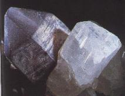
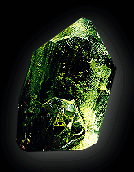
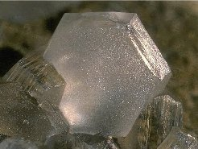
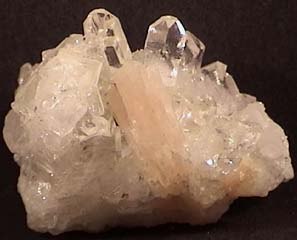
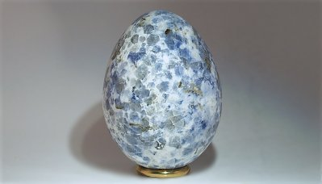

MÉMOIRES PRÉSENTÉS PAR DIVERS SAVANTS A L'ACADÉMIE DES SCIENCES DE L'INSTITUT IMPÉRIAL DE FRANCE revu le 24 avril 2002MÉMOIRES PRÉSENTÉS PAR DIVERS SAVANTS A L'ACADÉMIE DES SCIENCES DE L'INSTITUT IMPÉRIAL DE FRANCE ET IMPRIMES PAR SON ORDRE
SCIENCES MATHÉMATIQUES ET PHYSIQUES
TOME DIX-SEPTIÈME

Plan : Plan : chapitre III : métamorphisme de structure - chapitre IV : DOLOMIE, GYPSE, SEL GEMME, SOUFRE ET DÉPÔTS - chapitre V : gîtes métallifères dans leurs relations avec... - chapitre VI : décomposition des roches silicatées et sources minérales - Troisième partie : considérations théoriques ; expériences synthétiques à l'appui - chapitre I : chaleur interne, examen de ses effets - chapitre II : des vapeurs comme auxiliaires - chapitre III : l'eau comme agent du métamorphisme - chapitre IV : action de l'eau suréchauffée sur les silicates - chapitre V : déductions - chapitre VI : métamorphisme contemporain de Plombières - chapitre VII : conséquences de ces faits - chapitre VIII : autres particularités, cf. cap. IV et VI - chapitre IX : application aux roches éruptives - chapitre X : métamorphisme de structure - chapitre XI : la profondeur, expliquant ces phénomènes - Appendice : roches schisteuses avant la période silurienne -
PARTIE I - II - III - IV
Beaucoup de massifs de roche se laissent diviser plus ou moins nettement en feuillets parallèles [Souvent le joint ne se montre pas plus dans la roche que le clivage ne s'aperçoit dans les cristaux avant qu'on l'ait fait naître par le choc; il est en quelque sorte latent, ainsi qu'on le reconnaît dans les carrières d'ardoises.]. Ces feuillets ne sont pas un clivage de cristallisation; ils ne sont pas dus non plus à la stratification. Le plan des feuillets est fréquemment oblique à celui des couches. Cependant il y a des contrées où la disposition transversale est exceptionnelle, et où les feuillets sont en général parallèles à la stratification [Ce parallélisme habituel a été remarqué au Hartz, en Saxe, en Bretagne, en Ecosse, en Devonshire et dans le système du Rhin, par MM. Haussmann, Naumann, Durocher, Macculoch, de la Bêche, Baur et de Dechen.].
Cette structure feuilletée est surtout développée dans les schistes argileux ou phyllades; mais elle n'en est pas l'apanage exclusif et se poursuit dans des roches de nature différente, telles que dans les roches quartzites, les grès, les calcaires, surtout lorsque ceux-ci sont impurs. Diverses circonstances montrent que les roches feuilletées ont été soumises à des actions mécaniques, principalement à des pressions énergiques qui y ont produit des effets indélébiles. La plupart des fossiles que renfermaient ces roches ont été refoulés et étirés d'une manière très-caractéristique. C'est aux glissements qui sont résultés de ces pressions que la structure feuilletée paraît devoir son origine, comme d'ailleurs le confirme l'expérience que nous signalerons bientôt. Certaines particularités de structure, moins prononcées que la schistosité ou le clivage, proviennent sans doute aussi d'actions mécaniques. Tels sont les joints secondaires connus de ceux qui travaillent les ardoises [Le principal de ces joints secondaires est nommé longrain par les ardoisiers des Ardennes.], la structure fibreuse qui résulte comme d'un plissement des feuillets [La structure bacillaire de certains calcaires des Alpes, tels que celui de Klam, en Tyrol, en est un exemple. (Favre, Géologie du Tyrol allemand, Bibliothèque de Genève, 1849.) M. de la Bêche a donné des exemples de ces divisions dans son Geological report on Cornwall, p. 271.], la structure dite pseudo-régulière, fréquente dans les quartzites et dans la houille.
Ces divers modes de division seraient donc à signaler aussi comme le résultat d'un métamorphisme de l'espèce qui nous occupe. La structure schisteuse anormale, ou, en d'autres termes, la structure feuilletée, qui ne provient pas de la stratification par dépôt, quoique tres fréquente dans les terrains anciens, ne s y trouve pas toujours, et ne leur est pas exclusivement propre. D'une part, on ne rencontre pas de véritables phyllades dans les couches siluriennes de la Suède, de la Russie ou des Etats-Unis, qui ont conservé leur horizontalité première, et qui ont été mentionnées plus haut comme n'étant généralement pas métamorphisées ; d'autre part, des schistes propres à être exploités comme ardoises sont connus dans des terrains plus récents qui ont été disloqués, comme dans le terrain crétacé des Pyrénées et de la Terre-de-Feu [D'après M. Darwin.], et dans le terrain nummulitique de la Suisse, aux environs de Glaris. Ainsi l'origine de la structure feuilletée, de même que l'état métamorphique, paraît se lier essentiellement à l'existence de dislocations.
DOLOMIE, GYPSE, SEL GEMME, SOUFRE ET DÉPÔTS BITUMINEUX, DANS LEURS RAPPORTS AVEC LE MÉTAMORPHISME.
On sait que certaines dolomies résultent d'une transformation du calcaire [Au simple exposé des faits j'ajouterai, dans ces trois derniers chapitres, quelques considérations théoriques; cela me dispensera de revenir sur ces phénomènes dans la troisième partie.]. Cette épigénie peut s'expliquer, ainsi que l'ont confirmé les expériences synthétiques qui ont été faites sur ce sujet, par la réaction de combinaisons magnésiennes sur le carbonate de chaux70. Rien ne prouve, d'ailleurs, que la transformation en dolomie se soit toujours produite sous l'influence des mêmes agents, et que la dolomie du Campo-Longo, par exemple, avec ses tourmalines, ses corindons et ses minéraux variés, soit à assimiler à la dolomie d'autres régions des Alpes71 [Voir notamment les mémoires de M. Studer et la Physikalische Geographie du même auteur, t. I, p. 146.] et de Nice, ou à celle qui avoisine les gîtes de calamine de la Belgique. Mais il existe des dolomies, et c'est le cas du plus grand nombre, qui sont disposées par couches régulières, souvent horizontales, constituant des horizons géognostiques très étendus. Quand elles renferment des vestiges de coquilles, le test en a disparu; elles sont souvent cristallines et criblées de cavités, de manière à rappeler une substitution. Il est possible que ces dernières dolomies aient été précipitées directement [Par des réactions sur lesquelles M. de Sénarmont et M. Forchhammer ont fixé l'attention. (Annales de chimie et de physique, t. XXVIII, p. 710, et Erdmann, Jarhh für pract. Chem. t. XLIX, p. 52, 1850.)]; mais, à raison de la disparition des coquilles, il est difficile de ne pas admettre, avec M. Elie de Beaumont, que ce second cas se rapproche du premier, par la réaction qu'aurait exercée sur la matière précipitée le milieu où s'est opérée la précipitation, réaction telle que le carbonate de chaux aurait disparu. On remarque en effet que le calcaire pur n'alterne jamais avec elles.
Les dolomies stratifiées sont en général associées à des dépôts d'anhydrite et de gypse, roches qu'on a considérées également comme dues à une épigénie [Voir les observations de M. Elie de Beaumont sur ce sujet. ( Explication de la carte géologique de France, t. II, p. 90.)]; elles accompagnent fréquemment aussi des dépôts de sel gemme. Ces trois dernières roches72, qui offrent dans leurs allures des analogies frappantes, ont été, de même que la dolomie, rapportées à deux types de gisement. Le plus souvent elles sont subordonnées régulièrement à des terrains stratifiés, dont elles constituent un élément caractéristique, ainsi qu'on le voit dans le trias de l'Europe occidentale, dans celui de l'Espagne ou dans le terrain tertiaire des Carpathes. Ailleurs ce sont des dépôts adventifs qui paraissent se lier à des dislocations, comme on l'admet pour les gîtes des Alpes, du Salzbourg et de la Bavière, ceux des Pyrénées et de l'Algérie. Ainsi le caractère de double origine attribué aux dolomies se retrouve dans les gypses, anhydrites et sel gemme qui les accompagnent. Un caractère très-remarquable de tous les terrains salifères, et qui dénote aussi les analogies et la singularité de leur formation, ce sont les teintes rouges, unies ou bariolées, que présentent les argiles, les grès et même certains amas de sel qui les composent. Je ne pourrais que reproduire ici les considérations par lesquelles M. Elie de Beaumont a rapproché ces divers faits connexes, et montré que, dans la masse d'eau qui a déposé les marnes irisées73, il s'est sans doute passé des phénomènes analogues; par quelques-uns de leurs résultats, à ceux qui accompagnent les phénomènes volcaniques [Elie de Beaumont, Explication de la carte géologique de France, 1. II, p. 94. M. de Sénarmont a reconnu que le peroxyde de fer peut se déshydrater dans le sein même de l'eau, à des températures comprises entre 160 el 180 degrés. Cette réduction a même déjà lieu, d'après une expérience que j'ai faite, à 150 degrés seulement, dans une dissolution saturée de chlorure de sodium. J'ai aussi vérifié par l'analyse que les parties rouges des argiles bariolées ne diffèrent pas seulement des parties vertes ou grises par l'état de combinaison du fer, mais aussi par une proportion notablement plus forte de ce métal. Cette observation m'a conduit à imiter tout à fait les bariolures ordinaires des argiles, en faisant passer à chaud sur de l'argile ferrugineuse et successivement, des vapeurs d'acide chlorhydrique et d'eau. Certaines parties de l'argile se décolorent, tandis que les parties voisines se teignent en rouge aux dépens des premières.]74.
Ces terrains à teinte rouge sont souvent superposés à des couches parfaitement régulières, dont la coloration ne présente rien d'anormal : telles sont les marnes irisées qui reposent sur le muschelkalk. Cette circonstance, jointe à la considération des vastes superficies qu'ils occupent souvent, ferait croire que la chaleur du globe n'aurait exercé son action sur eux que d'une manière indirecte et en quelque sorte détournée, en échauffant l'eau de la mer. Ce serait donc peut-être à la faveur d'une chaleur plus élevée , et d'actions chimiques auxquelles la contraction du chlorure de sodium n'était pas étrangère, que la mer aurait teint elle-même les terrains salifères, laissant ainsi une sorte de témoignage d'une température qu'elle aurait exceptionnellement éprouvée à certaines époques et dans des portions étendues de son bassin.
On vient de dire que les dolomies régulièrement stratifiées sont attribuées à une épigénie du calcaire, et que c'est au moment du dépôt de ce dernier, et avant qu'il fût protégé par d'autres sédiments, que la transformation aurait eu lieu; or, il en est précisément de même pour certaines couches métallifères. Le schiste cuivreux du Mansfeld, les gîtes de fer lenticulaires de la Voulte et de Privas, les couches avec jaspe et minéraux métalliques des environs de Nontron ont été, ainsi que l'a fait remarquer M. Grimer, formées antérieurement à toutes les assises qui les recouvrent aujourd'hui [Annales des mines, 4° série, t. XVIII, p.91.]. Cette sorte d'épigénie immédiate, dans l'eau même où ces divers dépôts se sont formés, paraît donc constituer un caractère commun aux dolomies, aux roches rubéfiées et bariolées, ainsi qu'à beaucoup de couches métallifères75. Comme autre rapprochement avec les mêmes formations, je remarquerai encore que, dans des terrains d'âges variés, les gîtes métallifères sont souvent associés à la dolomie d'une manière si intime, qu'on ne saurait méconnaître qu'il y a lien d'origine entre ces deux sortes de dépôts. On peut citer comme exemples de ce fait les amas de calamine superposés au calcaire carbonifère de la Vieille-Montagne et de l'Eifel [Max Braun. (Zeitschr. d. deutschen geologischen Gesellschaft, Jahrg. 1857.) Gîte de Stolberg. (A. Gaudry, Bulletin de la Société géologique, 2° série, t. VIII, 105.)], ceux de San-Juan de Alcarras et de la province de Santander en Espagne ; les gîtes de même métal du muschelkalk de la Silésie et de la Pologne [Mémoire de MM. Karsten, de Carnall et autres sur cette contrée intéressante.], la dolomie zincifère d'Angleterre, les petits dépôts calaminaires de la France centrale, tels que Durfort (Lozère), Combecave (Lot), Alloue (Charente), les gîtes de galène des Alpujarras, les amas de fer de Vicdessos et du Canigou, dans les Pyrénées, les gîtes de manganèse du Nassau et ceux de Nontron (Dordogne), etc.[On pourrait comprendre aussi dans cette énumération la couche de schistes cuivreux du Mansfeld, les couches de grès plombifère et cuprifère de la Moselle, qui paraissent avoir été formées, de même que les couches citées plus haut par M. Gruner, antérieurement à toutes les couches qui les recouvrent aujourd'hui.]
Le soufre natif, dans ses principaux gisements, est, en générai, associé à des dépôts de gypse [Quelquefois aussi à l'alunite, et plus rarement au sulfate de strontiane, comme en Sicile.], soit par la relation de cause à effet, soit par la relation d'effet à cause. C'est ce qui se voit en Sicile et aux environs de Vieliczka en Pologne [Zeuschner, Dépôt de soufre de Suoszowice. (Annales des mines, 4e série, t. XVIII, 1850.)], de Teruel en Espagne [Les couches tertiaires de Teruel, où les planorbes et les lymnées sont remplies de soufre, sans que le test de ces coquilles ait disparu, et où la même substance s'est substituée aux tiges de chara, sont bien connues par les descriptions de MM. Esquerra del Bayo, Max Braun, de Verneuil et Collomb.] dans plusieurs régions de l'Italie, sur les bords du Volga [Pallas,t.I, 197 et 202. Murchison, Russia.]. Que le soufre soit arrivé de la profondeur à l'état d'hydrogène sulfuré, de même que dans les solfatares et certains gîtes métallifères de la Toscane, où il se dépose journellement encore sur les boisages des galeries, et qu'il se soit ensuite partiellement transformé en sulfate de chaux par une combustion plus ou moins complète, ou bien, que des couches de sulfate de chaux aient éprouvé une réduction ultérieure et produit du soufre par une réaction bien connue, sous l'influence des matières organiques auxquelles il est souvent encore associé [C'est sans doute à un phénomène de ce genre qu'est due l'attaque du doublage des navires dans certaines mers d'Afrique, ainsi que ce fait observé par le capitaine Wilmot sur les côtes du même continent, qu'il se dépose dans la mer du soufre mélangé, à peu près à poids égal, à une matière organique. (L'Institut, 13 mars 1844.)], il y a dans l'un et l'autre cas, entre le gypse et le soufre, des relations de métamorphisme ou d'épigénie. On peut remarquer toutefois que le premier phénomène paraît à peu près constamment accompagné d'une température élevée,tandis que la réduction des sulfates, même à l'état de dissolution, semble paralysée par toute élévation de chaleur capable d'arrêter les fermentations ou décompositions putrides, qu'éprouvent spontanément les matières organiques [La réduction du sulfate en sulfure n'a pas lieu à des températures très-élevées, d'après des expériences de M. de Sénarmont; ainsi les circonstances qui conviennent à la fermentation putride sont favorables à la réduction des sulfates en sulfures. J'ajouterai toutefois que le cuivre sulfuré s'est formé et a cristallisé à une température d'environ 70 degrés dans l'eau thermale de Plombières, ainsi que je l'ai annoncé ailleurs. (Annales des mines, 5° série, t. XII, p. 294.) Ce phénomène de réduction explique peut-être l'origine de certaines couches de sulfures métalliques, telles que le schiste cuivreux du Mansfeld.].
Les bitumes et autres carbures d'hydrogène, selon leur état et d'autres carbures solide, liquide ou gazeux, tantôt imprègnent des bancs, tantôt
en découlent (pétrole), tantôt s'échappent du sol, comme dans les volcans de boue, les sources inflammables, qui d'ailleurs, ne sont en général que des évents de dépôts bitumineux [Cette dernière relation est évidente dans les Apennins, en Albanie; dans la presqu'île de Taman, aux environs de Tiflis, etc.]. Les divers gisements bitumineux présentent comme traits généraux ou au moins remarquablement fréquents :- 1° D'être associés à des terrains salifères (Soultz-sous-Forèts, dans le Bas-Rhin; Landes; saline de Teklenbourg, dans le nord de l'Allemagne; sel décrépitant de Wieliczka, et autres régions des Carpathes; Brazza, près de Spalatro, en Dalmatie; Albanie, Perse, Chine, Etats-Unis, etc.) ;
- 2° D'être situés dans le voisinage de dépôts de combustibles ou de couches chargées de débris végétaux (Lobsann; Basses-Alpes; Seefeld et Hering en Tyrol; Bovey, en Devonshire ; Derbyshire, environs de Newcastle et de Glascow, etc.) ;
- 3° D'être, soit rapprochés d'accidents ignés, anciens ou modernes, c'est-à-dire de volcans ou de roches éruptives (Val di Noto, près de l'Etna; Auvergne, Gaujac dans les Landes, où le bitume sort d'un terrain salifère renfermant du lignite, au pied d'un pointement d'ophite; Java, Cap Vert); soit associés à des terrains disloqués (Hering, en Tyrol; salses de la Crimée, de la presqu'île de Taman [Mémoires de îa Société géologique de France, t. III, 1838.] et de la mer Caspienne qui sont dans le prolongement du Caucase) ;
- 4° D'être fréquemment accompagnés de sources thermales, souvent sulfureuses, et de dépôts de soufre (terrain permien du Volga; presqu'île de Kertch et diverses localités voisines du Caucase; environs de Mossoul, en Perse). Ces deux dernières circonstances paraissent résulter des associations qui ont d'abord été signalées.
Plusieurs de mes expériences rendent compte de ces relations. En soumettant des fragments de bois à l'action de l'eau surchauffée, je les ai transformés, au milieu même de l'eau, en lignite, en houille ou en anthracite, selon la température, et j'ai obtenu en outre des produits liquides et volatils ressemblant aux bitumes naturels et possédant jusqu'à l'odeur caractéristique du pétrole de Bechelbronn. C'est ainsi qu'on conçoit la présence du bitume dans certains filons métallifères concrétionnés (Derbyshire, Camsdorf, Baibi en Carinthie).
En résumé, les bitumes sont probablement des dérivés de substances végétales [Quoique M. Berthelot et d'autres chimistes soient parvenus, à l'aide de méthodes ingénieuses, à obtenir par voie synthétique des combinaisons dites organiques, rien n'autorise jusqu'à présent à croire qu'il en puisse être ainsi pour les bitumes.]; ils paraissent ne pas être de simples produits de distillation sèche, mais avoir été formés avec le concours de l'eau, et peut-être sous pression : le graphite ne serait que le produit le plus épuisé de ces substances [Le graphite et le bitume sont associés à Java, à proximité des terrains volcaniques, et dans un terrain tertiaire, à lignite, d'où il sort des jets d'hydrogène carboné.]. Ces diverses combinaisons carburées se rattachent donc à des transformations qui se passent dans l'intérieur des roches, vraisemblablement sous l'influence d'une température élevée. L'activité, et même la violence, parfois capable de produire de petits tremblements de terre, avec laquelle divers dégagements d'hydrogène carboné ont lieu dans la Tauride, au bord de la mer Caspienne, aux environs de Carthagène, dans l'Amérique du Sud, prouvent que les actions qui ont autrefois isolé le bitume continuent encore aujourd'hui.
GÎTES MÉTALLIFÈRES DANS LEUR RELATION AVEC LE MÉTAMORPHISME.
Les combinaisons métalliques provenant des profondeurs sont très fréquemment accumulées dans les fentes que presentaient les terrains et ont formé les filons métallifères. Quelquefois aussi ces combinaisons et les divers autres composés qui les accompagnaient se sont répandus dans les roches, dont elles ont pénétré la substance en lui faisant subir des transformations profondes. C'est ainsi que s'y sont introduits, à proximité de roches éruptives, les amas de fer oligiste de Framont, les dépôts du Banat, des environs de Christiania et de Turjinsk, où des minerais métalliques sont enchevêtrés au milieu de silicates, produits en même temps qu'eux dans la roche sédimentaire elle-même. De même, l'étain est arrivé dans beaucoup des amas qu'il constitue aujourd'hui, en réagissant profondément sur les roches encaissantes, comme je l'ai montré depuis longtemps, et en y engendrant des minéraux caractéristiques. Quand des massifs entiers de terrains ont métamorphisé, il arrive parfois que, sur de vastes étendues, des substances métalliques se sont logées entre leurs feuillets, dans des conditions telles qu'il est impossible de résister à l'idée que leur arrivée est liée à la cause même qui a produit le métamorphisme. Comme exemple, je citerai l'or associé à la pyrite de fer ou au mispickel, dans le Zillerthal, en Tyrol, dans la Galice, en Espagne, où il est en outre accompagné d'étain; mais c'est surtout dans l'Oural, au Brésil, dans les Alleghanys [Sur ce dernier pays, un mémoire récent de M. Lieber fournit des renseignements détaillés et intéressants (Colle , Gangstudien, t II, 1860.)], que ces terrains à la fois aurifères et métamorphiques atteignent de grandes dimensions.
En résumé, les dépôts métallifères, ainsi que les épanchements siliceux qui sillonnent beaucoup de contrées, ne sont que des cas particuliers des phénomènes métamorphiques.
Des causes, paraissant avoir une certaine analogie avec celles qui ont changé les couches sédimentaires en roches cristallines, ont souvent produit un effet inverse, et ont transformé des roches silicatées cristallines en silicates hydratés, tantôt amorphes et terreux, tels que les argiles, la stéatite, la terre verte, tantôt eux-mêmes cristallins, comme les zéolithes. On sait, surtout depuis les recherches d'Ebelmen76, comment les agents atmosphériques décomposent graduellement les roches atmosphériques silicatées [Je ne puis mentionner ici les importants travaux de MM. Fuchs, Berthier, Forchhammer, Turner, Fournet, Al. Brongniart, Malagutti et autres.]. L'acide carbonique de l'atmosphère, l'acide nitrique, qui s'y développe journellement, comme l'atteste le phénomène si général de la nitrification, enfin les acides organiques résultant de la décomposition des matières végétales, éliminent graduellement les alcalis et les terres alcalines, et les résidus, dans lesquels l'alumine se concentre de plus en plus, deviennent finalement des hydrosilicates d'alumine de la famille des argiles. Mais ce n'est pas seulement au voisinage de l'atmosphère que les argiles ont pu dériver de la transformation des roches silicatées cristallines.Les fumarolles volcaniques réduisent souvent les masses qu'elles traversent en véritables argiles, ordinairement bariolées (îles Lipari, solfatare de Pouzzoles, Islande, Açores, Kamtschatka [D'après les observations de Breislack, de MM. Hoffmann, Bunsen, Darwin et autres. M. Charles Deville a expliqué par une expérience cette réaction de l'hydrogène sulfuré sur les roches]). C'est là sans doute l'origine des boues que rejettent parfois les grands volcans des Andes. L'acide carbonique suffit même pour produire une décomposition analogue, ainsi que M. Fournet l'a reconnu depuis longtemps en Auvergne. Les solutions alcalines que renferment beaucoup de sources thermales, celles de Plombières, par exemple, paraissent décomposer les roches silicatées aussi énergiquement que le font les acides des fumarolles77. Des effets semblables se constatent souvent dans le voisinage des dépôts métallifères. Ainsi le gite de kaolin d'Aue, en Saxe, résulte certainement d'une décomposition du granit près des filons de fer qui le traversent; cet exemple peut être considéré comme le type de beaucoup de faits du même genre [Sosa en Saxe, près d'un filon de quartz, avec minerai de fer; environs d'Alençon, près d'un filon de quartz; gîtes de la Loire, d'après M. Gruner et M. Rozet; feldspath décomposé des arkoses de la France centrale, etc. halloysite de Louhassoa, près Bayonne; kaolin d'Eschassières, dans l'Allier, dans le porphyre feldspathique, d'après M. Boulanger. Ce sont des faits de ce genre qui avaient porté MM. Brongniart et Malagutti à attribuer la décomposition du feldspath à des effets voltaîques.].
Les divers amas de kaolin exploités en Cornouailles sont aussi associés aux gîtes d'étain; ils portent, ainsi que je l'ai remarqué depuis longtemps, la date et comme le stigmate de leur origine dans la substitution de l'oxyde d'étain et de la tourmaline aux cristaux de feldspath qui ont été dissous. Le kaolin de Middletown, dans le Connecticut, avoisiné de silicates fluorés et de colombite, résulte probablement d'actions semblables. Ces derniers faits nous autorisent à penser que des phénomènes analogues ont dû produire la décomposition des roches cristallines en kaolin, là même où l'on n'aperçoit pas aujourd'hui de dépôts métallifères; car, dans ce cas, les eaux qui ont agi pouvaient bien ne pas contenir de dissolutions métalliques. Le granit des Vosges est souvent altéré, notamment à Plombières, jusqu'à de grandes profondeurs. Quelquefois même, comme je l'ai montré ailleurs, la décomposition et la régénération du feldspath ont souvent eu lieu sur des points voisins, constituant ainsi comme deux phénomènes complémentaires [Annales des mines, 5° série, t. XII, p. 315, 1857.]. C'est peut-être à des actions du même genre qu'il faut rattacher la transformation, à l'état argileux, de massifs entiers de porphyre feldspathique, ce qui a valu, en allemand, à cette variété, le nom de thonporphyr : les cristaux de feldspath, tout en étant parfaitement formés, ne sont plus, en général, que du kaolin. Les sources de Plombières, qui nous ont donné des exemples de la production de minéraux, nous montrent aussi que certains hydrosilicates d'alumine du groupe des argiles ne proviennent pas d'une décomposition sur place. L'halloysite ou savon de Plombières, dont ces sources rapportent des profondeurs les éléments en dissolution, vient se déposer dans les canaux des sources, à la manière d'un véritable précipité chimique [Mémoire sar la relation des sources thermales de Plombières avec les filons métallifères. (Bulletin de la Société géologique de France, 2° série, t. XVI, p. 567.)]. On doit attribuer une origine semblable aux halloysites, lithomarges et autres hydrosilicates d'alumine qui, dans la France centrale, au Hartz, en Saxe et ailleurs, accompagnent souvent les gîtes métallifères avoisinant le granit [Berthier, Annales des mines, 2° série, t. III, p. 255. Dufrénoy, mêmes annales, 3e série, t. III, p. 393. Halloysites avec manganèse, près Nontron et Thiviers; avecgalène et calamine, à Villefranche, Angleur, près Liège, la Vieille-Montagne, Tarnowitz ; avec l'oxyde de fer, à la Voulte ; lithomarges avec l'étain oxydé, à Ehrenfriedersdorf, Zinnwald, etc.].
Les zéolithes, et nous le démontrerons plus loin, sont souvent aussi le résultat d'une véritable épigénie. Quant à la substitution fréquente de silicates magnésiens, stéatite, serpentine et talc, ou de la chlorite à des minéraux très-différents, elle paraît résulter de procédés de transformation qui ne sont pas sans analogie avec ceux dont il vient d'être question [L'attention a été depuis longtemps dirigée sur les épigénies, dont on connaît des exemples remarquables, à Gopfersgrun etThiersheim, près Wunsiedel, en Franconie, à Snarum, en Norwége ; à Predazzo, en Tyrol ; au Canada, et dans les roches cristallines des Alpes, y compris le protogyne. MM. Blum, Bischof, Volger et d'autres ont fait de nombreuses remarques sur l'origine probable de ces intéressantes substitutions. L'hypothèse d'une épigénie est confirmée par l'observation qu'a faite M. de Sénarmont, que des cristaux de serpentine coupés en tranches minces laissent passer la lumière, sans lui imprimer aucune des propriétés qui caractérisent une véritable cristallisation, et que, par conséquent, ils n'appartiennent pas à des cristaux sui generis. (Annales des mines, 5° série, t. VIII, p 498.)].
Si l'on prend le métamorphisme dans le sens le plus étendu du mot, quelques phénomènes d'origine superficielle se rattacheraient peut-être de loin au sujet qui m'occupe; telles seraient la précipitation du minerai de fer des marais, la production des nitrates, celle du carbonate de soude au fond des lacs, la formation des cailloux impressionnés, la décomposition de galets en kaolin, etc. Mais il serait difficile d'embrasser ici dans leur ensemble toutes ces transformations incessantes qui sont comme la vie du monde inorganique; je me restreindrai aux actions d'origine profonde.
CONSIDÉRATIONS THEORIQUES
SUR LA CAUSE DES PHENOMENES MÉTAMORPHIQUES;Dans les considérations théoriques que je vais exposer, je m'occuperai d'abord des roches dont l'origine métamorphique est démontrée par les conditions de leur gisement; les roches cristallines les plus anciennes ou azoïques, que l'on a quelquefois aussi considérées comme métamorphiques, mais sans les mêmes preuves à l'appui, feront l'objet d'un appendice qui termine ce travail. Quant aux dolomies et aux roches qui s'y rattachent, je n'ajouterai rien aux faits et aux explications que j'ai mentionnés dans la seconde partie.
LA CHALEUR INTERNE; EXAMEN DE SES EFFETS SUR LE MÉTAMORPHISME.
ELLE NE SUFFIT PAS POUR EXPLIQUER TOUS LES PHÉNOMÈNES.Les modifications des terrains compris sous le nom de métamorphiques ont incontestablement eu lieu à une température plus élevée que celle qui règne maintenant à la surface du globe. On peut le conclure d'abord du seul fait des analogies minéralogiques de ces terrains avec les roches éruptives, et notamment de la présence de nombreux silicates anhydres qui forment un de leurs traits les plus remarquables; en second lieu, de leur relation évidente avec des dislocations, dont le point de départ est toujours dans les régions profondes, et qui ont incontestablement pour cause première la chaleur interne du globe. La chaleur propre du globe décroît nécessairement du centre vers la surface, et, par conséquent, des sédiments déposés dans l'Océan, à la température relativement basse qui règne généralement dans ses profondeurs, ont dû, quand ils ont été recouverts ensuite par d'autres couches, acquérir une température plus élevée en raison de leur plus grand éloignement de la surface de rayonnement [Cette remarque est due à M. Babbage. (Lond. Edinb. Phil. mag. V. 213.) Sir John Herschel a fait des observations sur les réactions chimiques qu'ont dû subir les terrains par suite de cette élévation ultérieure de température. Le fond de la mer étant à une basse température, on ne pouvait admettre le réchauffement des couches sédimentaires, dans les termes où l'avait indiqué Hutton.]. La superposition de remblais puissants, comme lesont certains terrains stratifiés, a pu souvent suffire pour déterminer le réchauffement notable des masses inférieures postérieurement à leur dépôt, surtout aux époques où l'accroissement de la chaleur selon la verticale suivait une loi beaucoup plus rapide qu'aujourd'hui. On peut ajouter une observation : actuellement que le fond d'une grande partie de l'Océan ne paraît pas dépasser la température de trois ou quatre degrés, par ce fait seul qu'un dépôt sédimentaire serait mis à sec dans les régions tempérées, et que sa surface gagnerait par conséquent quelques degrés de température moyenne, tous les points situés sur une même verticale devraient également augmenter de température [D'après la remarque de sir John Herschel, notice précitée].
Ainsi la propagation régulière de la chaleur du globe a pu agir sur des terrains entiers et y produire graduellement la transformation que M. Elie de Beaumont a caractérisée par le nom de métamorphisme normal.A part les effets de cette cause générale et en quelque sorte latente, il est des parties circonscrites où la chaleur s'est portée très-près de la surface, notamment à la suite des roches éruptives. De là, des centres particuliers, autour desquels la chaleur interne est venue produire le métamorphisme accidentel ou de juxtaposition. Toutefois, des raisons très-puissantes font croire que, dans l'un et dans l'autre cas, ce n'est pas la chaleur seule qui a agi. Lors même que la température eût pu devenir assez haute dans les roches transformées pour en opérer le ramollissement, ce qui est le plus souvent tout à fait improbable [MM. Bischof et Durocher ont insisté sur des arguments de ce genre.], elle serait insuffisante pour rendre compte de la diversité des effets constatés. Les observations suivantes le prouvent. Si la chaleur seule est cause des modifications qu'on observe dans des terrains dont la puissance dépasse souvent mille mètres, comment cette action s'est-elle étendue sur une telle épaisseur ? Pourquoi, au moins, n'est-elle pas, d'après les lois connues de la propagation de la chaleur, et à raison de la faible conductibilité des roches, d'une énergie incomparablement moindre dans les parties éloignées que dans les parties voisines de la surface d'arrivée ? C'est pourtant ce qui n'existe pas, et la grandeur, comme l'uniformité des effets produits dans des massifs montagneux, entiers, est un phénomène des plus frappants [Souvent aussi, dans le métamorphisme de juxtaposition, ce n'est pas toujours dans les parties les plus voisines du contact des roches éruplives que les effets ont été le plus énergiques; M. Durocher a donné divers exemples de ce genre.].
De plus, si, laissant de côté les relations d'ensemble, on passe aux faits de détail, on trouve encore dans le mode d'agencement des roches métamorphiques une foule de circonstances d'association ou de gisement qui empêchent d'admettre pour ces minéraux une origine due à la chaleur seule. Pour en citer un exemple, je rappellerai le fait si fréquent de la cristallisation de silicates alumineux, comme la chiastolite et la staurotide, au milieu de phyllades fossilifères, et celles du grenat, du pyroxène ou du feldspath dans des calcaires également d'origine sédimentaire, qui souvent même ne sont pas sensiblement modifiés. La chaleur, puis la cristallisation, qui est la conséquence du refroidissement, peuvent, il est vrai, opérer des départs ou liquations entre des substances qui étaient primitivemetit dissoutes l'une dans l'autre; c'est ainsi que le carbone se sépare de la fonte, en cristaux, à l'état de graphite. Mais l'expérience directe ne nous montre rien d'analogue au développement, sous l'action de la chaleur, de cristaux isolés de grenat, de pyroxène, de feldspath, de disthène, dans une gangue calcaire, qui n'a pas même été ramollie, et qui, selon toutes les apparences, n'a été que très-faiblement échauffée. On conçoit que des actions lentes, comme la nature en emploie si souvent pour élaborer les produits minéraux, soient capables de bien des résultats que l'homme est impuissant à imiter; mais a-t-on le droit de chercher exclusivement dans la durée du temps et dans des causes vagues, pour ainsi dire occultes, des explications que rien d'ailleurs ne justifierait ?
Un même minéral peut se trouver parfaitement isolé et cristallisé, au milieu de matrices très-différentes: par exemple, la tourmaline, le mica, le feldspath, le grenat, l'épidote, se présentent souvent, au milieu du quartz, avec les mêmes caractères que dans le sein du calcaire ou de la dolomie. Cette indépendance des silicates à l'égard de leur gangue paraît aussi annoncer que les minéraux ne sont pas de simples produits de liquation, puisque des milieux aussi différents n'auraient pas sécrété des composés identiques78. Partout, d'ailleurs, on rencontre, dans les roches métamorphiques, des minéraux très-inégalement fusibles, qui ont cristallisé dans un ordre de succession tout à fait opposé à celui qu'on aurait dû attendre, dans l'hypothèse en question, de leurs rapports de fusibilité. Des arguments de nature diverse s'opposent donc à ce qu'on admette qu un métamorphisme, n'ayant pas d'autre cause que la chaleur, ait donné naissance, dans les roches qui l'ont subi, aux minéraux qu'on y rencontre, même quand ces minéraux ne paraissent pas contenir de corps simples, étrangers à la composition normale primitive. Mais combien cette conclusion est-elle plus démonstrative quand on voit, au Brésil, le changement d'état des roches coïncider visiblement avec l'introduction de corps tout spéciaux qui, selon toute probabilité, n'ont pu venir s'y fixer qu'ultérieurement ?
DE CERTAINES VAPEURS CONSIDÉRÉES COMME AUXILIAIRES DE LA CHALEUR,
LEUR ACTION COMBINÉE AVEC CELLE DE LA CHALEUR EST ENCORE INSUFFISANTE.Si la chaleur seule a été impuissante à produire les effets dont nous venons de parler, son action, aidée de certains corps gazeux faciles à réduire en vapeur, pourra-t-elle suffire à leur explication ? C'est l'idée qui s'est naturellement présentée la première à l'esprit; car la nature montrait des vapeurs abondantes et à affinités énergiques, dans les exhalaisons des cratères des volcans ou de leurs laves encore incandescentes. Ces vapeurs et gaz sont des composés où dominent les corps électro-négatifs, que les anciens minéralogistes appelaient, comme par instinct, les minéralisateurs, savoir : le chlore, le soufre, le carbone; plus rarement le fluor et le bore. (Les observations récentes de MM. Boussingault, Bunsen et Charles Deville ont contribué à en bien faire connaître la nature.) L'acide carbonique, l'acide sulfhydrique, l'acide sulfurique même, ont pu réagir autrefois sur quelques roches, d'une manière semblable à ce que l'on observe dans certaines masses de gypse et d'alunite qui se forment encore aujourd'hui en Toscane [Notamment à Selvena et à Pereta, comme l'a montré M. Coquand. (Bulletin de la société géologique de France, 2° série, t. VI, p. 91.)], ou dans les roches voisines des volcans des Andes et de Java, qui se réduisent sous leur action en une véritable boue. La décomposition de vapeurs chlorurées forme, également sous nos yeux, le fer oligiste, et a pu donner naissance autrefois, dans beaucoup de leurs gisements, à l'oxyde d'étain et à l'oxyde de titane, comme l'apprennent à la fois l'observation et l'expérience synthétique. C'est d'une manière analogue que la magnésie cristallisée ou périclase, engagée dans les calcaires rejetés de la Somma, a peut-être été produite par la décomposition du chlorure de magnésium par le carbonate de chaux. Cette supposition, que rendait vraisemblable l'abondance de vapeurs chlorurées du volcan actuel, a été confirmée par l'expérience dans laquelle j'ai imité artificiellement ce minéral [Recherches sur la production artificielle des minéraux de la famille des silicates et des aluminates par la réaction des vapeurs sur les roches. (Comptes rendus de l'Académie des sciences., t. XXXIX, p. 135.)]79. Il est remarquable de voir les mêmes corps, qui produisent la périclase aux dépens du calcaire, former, en dissolution et à une température moindre, de la dolomie. Le rôle qu'ont joué les chlorures à de hautes températures, pour produire la cristallisation des minéraux, ressort d'ailleurs clairement des expériences plus récentes de MM. Manross, Forchammer et Henri Deville. D'autres expériences ont aussi montré que les chlorures de silicium et d'aluminium, en réagissant à l'état de vapeur sur les bases qui entrent dans la constitution des roches, y forment des silicates simples ou multiples qui sont identiques à certains produits naturels [Mémoire de M. Daubrée qui vient d'être cité.]. Or, si le mica exhale encore par la chaleur des fluorures de silicium, de bore et de lithium, osera-t-on affirmer que les pâtes granitiques n'aient pas aussi renfermé dans l'origine des chlorures de silicium et de bore, bien qu'on ne les trouve pas au milieu des vapeurs qu'on recueille aujourd'hui à proximité des orifices volcaniques; car ils ne manqueraient pas d'y être décomposés et précipités par la vapeur d'eau avant d'arriver à l'atmosphère ? D'ailleurs, ne voit-on pas encore le chlore fixé en quantités considérables dans certains massifs cristallins, comme la syénite zirconienne de Norwége et la roche de l'Ilmen (miascite), où il est principalement combiné à l'éléolithe, et où il fait partie du cortège du zirconium, du tantale et d'autres métaux rares qui sont presque exclusivement propres à ces roches ? Quant au fluor et au bore [La présence du fluor, déjà reconnue dans diverses roches volcaniques modernes , a été constatée par M. Scacchi dans un dépôt récent de fumarolles du Vésuve. Quant au bore, d'après les énormes quantités qui sortent des soffionis de la Toscane et les dépôts notables du cratère de Vulcano, on ne peut guère douter qu'il n'en existe dans beaucoup d'autres localités où il a passé inaperçu jusqu'à ce jour.], j'ai fait voir depuis longtemps qu'ils paraissent avoir concouru à la formation de beaucoup d'amas stannifères [Mémoire sur le gisement, la constitution et l'origine des amas de minerai d'étain. (Annales des mines, 3e série, t. XX, p. 65 , 1841.) Recherches sur la reproduction artificielle de l'oxyde d'étain, de l'oxyde de titane, etc. (Annales des mines, 2° série, t. XVI, p. 129, 1849.)]. Ils entrent, en effet, dans la constitution de silicates caractéristiques, comme la topaze80 et la

FIGURE I
(topaze)tourmaline, qui y ont été certainement engendrés en même temps que l'oxyde d'étain [Ce premier rapprochement établi entre le bore et l'étain sur des données purement géologiques a été suivi de la découverte d'une analogie inattendue entre deux corps dont les propriétés chimiques sont si différentes : je veux parler de leur isomorphisme, qui a été démontré par les éludes de M. Sella.]. Ces conclusions sont également applicables à des roches dont l'origine métamorphique est due, selon toute vraisemblance, à des phénomènes analogues. Telle est la roche bien connue de Schneckenstein, en Saxe, où ces topazes et ces tourmalines paraissent être venues s'insinuer entre les feuillets du schiste, tout en cimentant, concurremment avec le quartz, les nombreux fragments dans lesquels ce schiste avait été concassé. Il en est de même au Brésil, pour des terrains entiers, tels que les roches schisteuses où abonde la topaze, dans la contrée de Villarica, et dans lesquelles l'or et le diamant se sont produits sur de vastes étendues avec les mêmes minéraux caractéristiques. Ces terrains ne sont en quelque sorte qu'une accumulation, sur un grand espace, des gangues habituelles de l'oxyde d'étain [Je suis d'ailleurs bien loin de penser que ces diverses roches quartzeuses aient été formées sans la présence de l'eau; je vais bientôt revenir sur ce sujet.]. Il reste, d'ailleurs, encore fixé dans le granit des quantités assez sensibles de fluor et même de bore, pour que l'on admette que cette roche a pu fournir, avant de se solidifier, des quantités notables de vapeurs où ces corps étaient en combinaison. Ces idées sur l'intervention du fluor et du bore, qui datent de vingt ans, ont encore acquis plus de valeur depuis que M. Henri Deville a fait cristalliser une série de minéraux à l'aide des fluorures81, et que, d'autre part, la présence du fluor et du bore a été constatée dans beaucoup d'eaux minérales, et même celle du premier dans l'eau de la mer. Ainsi, en unissant à l'action de la chaleur les auxiliaires dont je viens de parler, il est clair qu'on explique un plus grand nombre de transformations que par la chaleur seule ; mais il ne l'est pas moins qu'on ne peut se rendre compte de certaines circonstances qu'en attribuant aux vapeurs un rôle évidemment bien exagéré. C'est ce que M. Bischof et d'autres savants ont bien fait ressortir par de nombreuses considérations [Comment, par exemple, admettre une telle origine pour la formation de cristaux de feldspath ou de grenat dans des couches régulières, qui sont souvent à peine modifiées ?].
Dans les exhalaisons volcaniques, il est un corps qui n'a pas tout
d'abord fixé l'attention, parce que, sous l'empire des idées anciennes, il semblait tout à fait inerte, surtout en présence des minéraux dont il s'agit d'expliquer la formation, mais auquel pourtant le premier rôle paraît devoir être dévolu, dans les phénomènes métamorphiques aussi bien que dans les éruptions des volcans : ce corps, c'est l'eau, qui se trouve dans ces exhalaisons, non en quantité minime, comme les vapeurs dont nous venons de nous occuper, mais, au contraire, comme le produit à la fois le plus abondant et le plus constant des éruptions, dans toutes les régions du globe. La singulière propriété que possèdent les silicates incandescents des laves de retenir pendant fort longtemps, et jusqu'au moment de leur solidification, des quantités d'eau considérables, démontre clairement que l'action de la chaleur n'exclut pas celle de l'eau, et paraît annoncer que cette dernière a, même à ces hautes températures, une certaine affinité pour les silicates. Nous ne connaissons des masses situées à une certaine profondeur dans notre globe que ce qu'en apportent les volcans; or ces déjections renferment toutes, sans exception, de l'eau, soit combinée, soit mélangée; nous sommes donc en droit de penser que l'eau joue un rôle tout à fait important dans les principaux phénomènes qui émanent des profondeurs. On a vu, en effet, dans la partie historique de ce travail, que des motifs concluants ont déjà fait attribuer à l'eau des actions très-puissantes, telles que la formation de beaucoup de filons métallifères, et une influence incontestable sur la cristallisation des roches éruptives elles-mêmes, y compris le granit.
A la vérité, les laves les plus chaudes et les plus chargées d'eau, ainsi que les basaltes et les trachytes, ne modifient pas les roches sur des épaisseurs notables; mais cela tient sans doute à ce que, dès qu'elles passent à la simple pression atmosphérique, l'eau peut s'échapper en se réduisant à l'état de vapeur. Les nombreux blocs de calcaire venus des foyers volcaniques dans les tufs de la Somma nous montrent, en effet, dans leurs géodes tapissées de minéraux si variés et si bien cristallisés, ce que peuvent subir des roches lorsqu'elles sont exposées à l'action permanente de certains agents, sous la pression sans laquelle quelques-uns de ces agents ne sauraient acquérir toute leur énergie, ni d'autres même subsister. Quelque chose de tout à fait semblable est offert par le petit massif basaltique du Kaiserstuhl, dans le grand-duché de Bade [Annales des mines, 5° série, t. XII, p. 332. Il en esl encore de même des schistes devenus micacés que M. Mitscherlich a observés dans les produits volcaniques de l'Eifel. (Naumann, Géognosie, t. I, p. 791.)]. Un lambeau de calcaire, arraché par le basalte aux terrains qu'ii a traversés, a été modifié par lui de la manière la plus intime. Devenu tout à fait lamellaire, il renferme des cristaux de fer oxydulé titanifère, de pyrite de fer, de mica magnésien, de perowskite, de pyrochlore, du quartz cristallisé et d'innombrables aiguilles d'apatite. Le privilège, si exceptionnel parmi les roches en contact avec les basaltes, qui le caractérise, me paraît résulter de son gisement. Ce calcaire est en effet situé au fond d'un cirque de soulèvement : avant que la dernière dislocation éprouvée par le massif le mît au jour, il subissait, à une certaine profondeur, et par conséquent sous pression, l'action des eaux chaudes, dont le basalte était lui-même imbibé, dans les innombrables boursouflures duquel ces eaux ont déposé des minéraux. De même que le calcaire du Kaiserstuhl, les calcaires si riches en minéraux variés de la Somma et celui du Latium ont été élaborés sur des points où se sont formés des cratères de soulèvement. Quand les couches qui fermaient hermétiquement le lieu où se passaient ces réactions chimiques ont donné, en se brisant, issue aux agents qui les produisaient, ces réactions ont cessé d'avoir lieu. Or, quelle différence d'actions peut-il exister, dans le cas qui nous occupe, entre ce qui se passe à la surface et ce qui se passe dans les régions profondes ? Pas d'autre, selon toute apparence que celle qui est due à la différence des pressions. Si la vapeur d'eau très-chaude ne peut, pas plus que l'eau liquide chauffée sous la simple pression atmosphérique actuelle, arriver à produire, dans les expériences ordinaires, des silicates, tels que ceux que nous offrent les terrains métamorphiques, c'est qu'il manque pour cela quelque chose d'essentiel, et tout annonce que ce qui manque, c'est une plus forte pression82.Telles sont les considérations qui ont conduit d'abord à penser que le concours de la chaleur, de l'eau et de la pression avait pu produire les principaux phénomènes du métamorphisme. Il ne restait qu'à se placer dans des conditions aussi voisines que possible de celles dans lesquelles la nature paraît avoir agi, et à examiner si l'on obtiendrait la reproduction de minéraux caractéristiques. C'est le but dune série d'expériences que j'ai entreprises et dont je vais rendre compte.
EXPERIENCES SUR L'ACTION EXERCÉE DANS LA FORMATION DES SILICATES
PAR L'EAU SURCHAUFFÉE.Plusieurs de ces expériences ont déjà été décrites dans un mémoire précédent [Observations sur le métamorphisme et recherches expérimentales sur quelques-uns des agents qui ont pu le produire. [Annales des mines, 5° série, t. XII, p. 289, 1857; et Bulletin de la Sociétégévoloqique de France, 2° série, t. XV, p. 97, 1848.)] Je crois cependant devoir reproduire ici les principaux résultats qui sont consignés dans ce travail, et y ajouter ceux que j'ai obtenus ultérieurement. En comptant même pour rien le danger des explosions, qui sont souvent d'une violence tout à fait surprenante [Des tubes, d'un diamètre inlérieur de vingt et un millimètres et d'une épaisseur de onze millimètres, fabriqués avec du fer d'excellente qualité, font quelquefois explosion; ils se déchirent suivant une de leurs génératrices, et sont alors projetés en l'air avec un bruit comparable à celui d'un coup de canon. Si le fer n'avait point de défaut, et que l'on estimât qu'il conserve à 300 degrés la même ténacité qu'à froid, de telles déchirures supposeraient une pression intérieure de plus de 1,000 atmosphères. Il est à remarquer qu'avant d'éclater, le canon se bombe sous forme d'une ampoule de cinq à six centimètres de longueur, et c'est au milieu de cette ampoule que s'ouvre une sorte de boutonnière, de façon à rappeler d'une manière frappante le relief de la gibbosité de l'Etna, avec l'échancrure centrale du
Val del Bove, dont l'origine a depuis longtemps été attribuée, par MM. de Buch et Elie de Beaumont, à une force expansive du même genre.], les difficultés d'expérimentation m'ont empêché de multiplier ces résultats comme il eût été désirable : cependant les faits déjà reconnus sont concluants, et montrent la fécondité de cette voie d'expérimentation. La difficulté principale consiste à trouver des parois et des fermetures qui résistent assez longtemps à l'énorme tension qu'acquiert la vapeur d'eau, quand la température approche du rouge sombre. L'eau et les matières qui doivent réagir sont placées dans un tube en verre que l'on scelle ensuite. On introduit ce tube en verre dans un tube en fer, à parois très-épaisses, qui est clos à la forge à l'une de ses extrémités. L'autre extrémité est souvent fermée au moyen d'un long bouchon à vis, muni d'une tête carrée qu'on peut serrer fortement, en la tournant avec une clef. Entre la tête de la vis, qui doit être exécutée avec beaucoup de précision, et le rebord du tube, est placée une rondelle en cuivre bien pur; elle doit être assez mince pour pouvoir s'écraser, lors de la fermeture, par la pression du rebord, et s'incruster dans des rainures pratiquées à cet effet. Cependant, pour fermer la seconde extrémité, j'adopte maintenant de préférence un autre procédé, qui consiste à y rapporter à la forge un fort bouchon de fer, qui arrive à faire corps avec le canon, si la soudure a été habilement opérée. Il faut, pour réussir, un ouvrier très-adroit; car il est essentiel que la plus grande partie du canon reste froide, afin que l'eau intérieure, en se vaporisant, ne contrarie pas l'opération. Pour contre-balancer, dans l'intérieur du tube de verre, la tension de la vapeur, qui pourrait le faire éclater, je verse de l'eau extérieurement à ce tube, entre ses parois et celles du tube de fer qui lui sert d'enveloppe. De cette manière, l'effort principal est reporté sur ce dernier tube, qui présente beaucoup plus de résistance. Ces appareils, comme ceux dont M. de Sénarmont a fait usage, sont couchés sur le dôme ou sur les carneaux d'un four à cornues d'usine à gaz, en contact avec une maçonnerie qui est au rouge sombre, et enfouis sous une couche épaisse de sable. A une température qui est au-dessous du rouge naissant, l'eau réagit très-énergiquement sur certains silicates. Ainsi le verre ordinaire donne, au bout de quelques jours, deux et souvent trois produits distincts :- 1° une masse blanche et tout à fait opaque, qui résulte d'une transformation complète du verre; elle est poreuse, happant à la langue, et aurait l'aspect du kaolin si elle n'avait une structure fibreuse très-prononcée. La substance a perdu une quantité notable de son poids, environ la moitié de sa silice et le tiers de son alcali; il s'est formé un nouveau silicate qui a fixé de l'eau et qui appartient, par sa composition, à la famille des zéolithes [Bulletin de la Société géologique de France, 1° série, t. XVI, p. 588. A une température plus éfevée, on obtient un silicate anhydre, qui parait voisin de la wollastonite.];
- 2° du silicate alcalin qui s'est dissous, en entraînant de l'alumine;
- 3° souvent il s'est en outre développé d'innombrables cristaux incolores, d'une limpidité parfaite, qui offrent la forme ordinaire bipyramidée du quartz, et qui, en effet, ne sont autres que de la silice cristallisée. Certains cristaux ainsi formés atteignent 2 millimètres au bout d'un mois. Tantôt ils sont isolés dans la pâte opaque, tantôt ils sont implantés sur les parois du tube primitif, où ils forment de véritables géodes, qu'il serait de toute impossibilité de distinguer, à la dimension près, de celles que les roches cristallines présentent si fréquemment.
Ce qui rend cette transformation du verre encore plus remarquable, au point de vue géologique aussi bien que sous le rapport chimique, c'est quelle s'obtient par une très-faible quantité d'eau, par un poids qui n'est pas même égal au tiers de celui du verre transformé. Les verres volcaniques connus sous le nom d'obsidienne se comportent d'une manière comparable aux verres artificiels. Des morceaux d'obsidienne chauffés, dans les mêmes conditions, se changent en un produit d'une nature grisâtre, cristalline, ayant l'aspect d'un trachyte à grains fins. La poussière de ce produit, examinée au microscope, montre tout à fait les caractères du feldspath cristallisé, et ressemble surtout au rhyacolite ou feldspath vitreux. On sait du reste que l'obsidienne paraît se rapprocher beaucoup du feldspath par sa composition chimique; des circonstances favorables auront sans doute déterminé la réunion de ses éléments dans les proportions définies où elles constituent ce dernier minéral. La tendance que le feldspath manifeste ainsi à se produire par la voie humide, est à prendre en considération dans diverses circonstances géologiques. Avec les fragments d'obsidienne sur lesquels j'ai opéré, se trouvaient des morceaux de feldspath vitreux détachés du trachyte et de l'oligoclase de Suède. Ces deux derniers minéraux n'ont subi aucune altération appréciable [Cependant le feldspath peut se décomposer à froid, par la trituration, comme je l'ai montré ailleurs. (Annales des mines, 5° série, t. XII, p. 547.)]. On ne peut toutefois affirmer que si l'eau n'avait pas immédiatement trouvé d'alcali à enlever à l'enveloppe vitreuse, elle n'en aurait pas pris au feldspath. Nous pouvons néanmoins déduire de ces deux derniers faits qu'en général les silicates des roches cristallines se sont vraisemblablement formés dans des conditions assez voisines de celles où ils se trouvaient de nouveau placés dans mes expériences. Il en est à peu près de même des feuilles très-minces de mica potassique de Sibérie; elles ont à peine perdu de leur transparence. Des cristaux de pyroxène n'ont pas plus changé d'aspect, si ce n'est que, comme les morceaux de feldspath et d'obsidienne, ils ont été si complètement enveloppés de cristaux de quartz, qu'il faut les briser pour en reconnaître la nature. Pour examiner, autant du moins que la présence du verre le permettait, comment se comportent, à l'état surchauffé, les
solutions naturelles de silicate alcalin, que l'on trouve communément dans les eaux, je me suis servi de l'eau provenant des sources thermales de Plombières, qui est comparativement riche en silicates de potasse et de soude. Cependant, ne pouvant opérer que sur 20 à 30 centimètres cubes, j'ai préalablement concentré cette eau par une évaporation assez rapide pour que l'acide carbonique de l'air n'en décomposât pas sensiblement les silicates, et de manière à la réduire au vingtième de son volume primitif. Après une expérience qui avait été arrêtée au bout de deux jours seulement, les parois du tube étaient déjà recouvertes d'enduits de silice sous la forme de quartz cristallisé et aussi de calcédoine. Comme le verre n'était encore altéré qu'à sa surface, ce dépôt devait provenir, presque en totalité, sinon entièrement, de la décomposition du silicate alcalin contenu dans l'eau de Plombières.
Ainsi, sans l'application d'aucun réactif chimique, sous la seule
influence de la chaleur, l'eau tenant en dissolution des silicates alcalins, telle que celle des sources de Plombières, dépose du quartz cristallisé ou cristallin. Une nouvelle preuve de la facilité avec laquelle les minéraux du groupe des feldspaths peuvent se produire en présence de l'eau est fournie dans l'expérience suivante, que j'ai faite dans le but d'expliquer des feldspathisations assez fréquentes, même dans les roches fossilifères. Du kaolin parfaitement purifié, par le lavage, de tout débris feldspathique, ayant été traité dans un tube par l'eau de Plombières, cette masse terreuse est transformée en une substance solide, confusément cristallisée en petits prismes, et qui raye le verre. Après avoir purifié cette substance par un lavage à l'eau bouillante, on voit qu'elle est devenue fusible en émail blanc; l'acide chlorhydrique ne l'attaque plus. C'est un silicate double d'alumine et d'alcali qui a tous les caractères du feldspath; il est mélangé d'un peu de quartz cristallisé. Cette réaction peut se comparer à la facilité avec laquelle le silicate d'alumine absorbe la chaux à froid dans un mortier hydraulique.
A la surface et dans l'intérieur de la masse blanchâtre résultant de la transformation du tube, l'ai obtenu d'innombrables cristaux très petits, mais de forme parfaitement nette, doués de beaucoup d'éclat et bien transparents ; ils présentent diverses nuances de vert, et beaucoup d'entre eux ont la teinte vert-olive qui est habituelle au péridot83.
FIGURE II
(cristal naturel de péridot)Leur forme est celle d'un prisme oblique symétrique, dont les bases sont remplacées par deux biseaux; deux des arêtes opposées sont ordinairement tronquées, comme dans le pyroxène que Haüy a nommé homonome. Ces cristaux rayent sensiblement le verre ; ils restent inaltérables en présence de l'acide chlorhydrique concentré et bouillant. Ils fondent au chalumeau en un émail noir. Enfin, ils ont la composition du pyroxène à base de chaux et de fer; et, par leur transparence, ils appartiennent à la variété diopside. Ces cristaux sont, les uns isolés, les autres groupés de manière à former de petits globules hérissés de pointements, et, plus rarement, des incrustations minces. Les uns et les autres rappellent immédiatement, par leur aspect, les cristaux de diopside les plus connus.
De l'argile de Klingenberg, près Cologne, que l'on emploie pour faire les creusets de verrerie, étant chauffée dans des tubes en verre, se charge d'une multitude de paillettes blanches, nacrées et douées de l'éclat du mica; ces paillettes sont hexagonales et jouissent d'un axe optique de double réfraction [D'après l'examen qu'en a bien voulu faire M. de Sénarmont.]. Elles sont fusibles et indiquent au chalumeau la présence de la silice; elles sont attaquables par l'acide chlorhydrique, qui manifeste les réactions de l'alumine. La trop faible quantité que j'ai pu en obtenir jusqu'à présent ne m'a pas permis d'en faire l'analyse quantitative. Il paraît toutefois très-probable que la substance est un mica à un axe ou une chlorite. Les végétaux fossiles ayant subi des modifications sous l'influence des mêmes agents que les matières pierreuses, il convenait de voir ce que deviendrait du bois dans l'eau surchauffée. Des fragments de bois de sapin se sont transformés en une masse noire, douée d'un vif éclat, d'une compacité parfaite, ayant, en un mot, l'aspect d'une anthracite pure, et assez dure pour qu'une pointe d'acier la raye difficilement.Cette sorte d'anthracite, bien qu'infusible, est entièrement granulée sous forme de globules réguliers de diverses dimensions, d'où il résulte clairement que la substance a été fondue en se transformant; elle ne donne par calcination que des traces de substances volatiles; la matière ligneuse y est donc arrivée à son dernier degré de décomposition. Cette matière, qui n'est donc que du carbone très compacte, ne se consume qu'avec une excessive lenteur, même sous le dard oxydant du chalumeau, elle diffère des charbons formés à haute température, en ce qu'elle ne conduit pas l'électricité, non plus que le diamant.
Les filons d'argent qu'on voit à Kongsberg, en Norwège, encaissés dans le gneiss, renferment de l'anthracite qui présente la plus grande ressemblance avec cette anthracite artificielle; elle s'est moulée, au milieu de la chaux carbonatée et de l'argent natif, sous des formes qui annoncent qu'elle a aussi passé par un état de mollesse. A des températures moindres et dans des conditions d'ailleurs analogues, le bois se transforme en une sorte de lignite ou de houille. Dans ces expériences, j'ai obtenu, ainsi que je l'ai dit plus haut, des produits liquides et volatils ressemblant aux bitumes naturels et possédant jusqu'à leur odeur caractéristique.En résumé, l'eau surchauffée a une influence très-énergique sur les silicates; elle en dissout un grand nombre, détruit certaines combinaisons à bases multiples, en fait naître de nouvelles, soit hydratées, soit anhydres; enfin elle fait cristalliser ces nouveaux silicates bien au-dessous de leur point de fusion. L'acide silicique mis en liberté dans ces dédoublements s'isole sous forme de quartz cristallisé. Des transformations si complètes sont, d'ailleurs, obtenues par de très-faibles quantités d'eau. En général, on y distingue cette loi, que, vers le rouge naissant, la voie humide développe, en ce qui concerne la production des silicates, des affinités analogues à celles qui se manifestent par voie sèche, mais seulement à une température beaucoup plus élevée, et que de plus elle arrive à engendrer des combinaisons qui ne peuvent en aucun cas se former par cette dernière voie.
DÉDUCTIONS TIRÉES DES EXPÉRIENCES QUI PRÉCÈDENT,
POUR L'EXPLICATION DE LA CRISTALLISATION DES ROCHES SIL1CATEES, ÉRUPTIVES ET MÉTAMORPHTQUES.Les résultats qui viennent d'être exposés permettent de rendre compte de ce qui se passe dans la cristallisation des roches silicatées en général, tant éruptives que métamorphiques. Examinons d'abord les premières et commençons par les laves. L'eau, quel qu'en soit l'état moléculaire dans les laves, intervient, pour les faire passer à l'état cristallin, à peu près comme la cristallisation dans les expériences de laboratoire, pour transformer l'obsidienne en feldspath cristallisé et déposer le pyroxène en cristaux parfaits. Dans l'un comme dans l'autre cas, l'eau paraît favoriser le départ de substances qui, sans sa présence, resteraient mélangées, et provoquer la cristallisation des silicates à une température bien inférieure à leurs points de fusion84 [Je rappellerai ici l'opinion de Dolomieu sur la cristallisalion des laves : « Je le répéterai peui-être pour la centième fois, les laves compactes ne sont pas des vitrifications, el leur fluidité au sortir des volcans, laquelle se continue beaucoup plus longtemps que ne devrait le permettre leur refroidissement, est un effet très singulier d'une cause qui n'est pas encore déterminée. » [Journal des mines, n° 37, p. 402, 1797-)]85.
C'est aussi par l'influence de cette sorte d'eau-mère que les mêmes silicates peuvent cristalliser dans une succession qui est souvent opposée à leur ordre relatif de fusibilité. On sait, par exemple, que l'amphigène, silicate d'alumine et de potasse qui est infusible, s'est développé, dans les laves de l'Italie, en cristaux souvent très volumineux, qui empâtent de nombreux cristaux de pyroxène, substance dont on connaît la fusibilité. Ces anomalies apparentes se présentent d'une manière encore plus frappante dans le granit, qui diffère de tous les produits de fusion sèche que nous connaissons, et on a cherché à s'en rendre compte par diverses conjectures. On peut l'expliquer à peu près de la même manière; seulement, dans le granit, l'action de l'eau paraît, d'après les observations de M. Elie de Beaumont, avoir été, encore plus que dans les laves, aidée par quelques auxiliaires, tels que des chlorures et fluorures86. Dans les porphyres feldspathiques quartzifères, l'eau a pu suffire seule pour donner naissance aux cristaux bipyramidés qui caractérisent cette roche. C'est encore là un phénomène de départ qui n'a aucun analogue dans les produits de la voie sèche. La remarquable association de silicates anhydres et de silicates hydratés que présentent le basalte, le phonolithe et d'autres roches, n'a plus rien de surprenant, après les expériences dont je viens de rendre compte, car, dans la même opération et dans le même tube, j'ai obtenu des cristaux de pyroxène disséminés au milieu d'une zéolithe, c'est-à-dire simultanément deux éléments constitutifs du basalte.
Une difficulté plus grande s'offrait encore, quand on considérait, d'une part, l'état de mollesse ou même de fluidité de certaines roches éruptives, et, d'autre part, leur faible chaleur primitive bien établie par diverses circonstances. Cette difficulté est encore levée, quand on considère ce qui s'est passé dans les mêmes expériences. Des tubes en verre, parfaitement réguliers, ont été retrouvés, après l'opération, gauchis, déformés, couverts d'ampoules, de manière à prouver qu'ils ont subi un véritable ramollissement. Il y a plus : quelquefois le tube a en quelque façon disparu ; il s'est transformé en une sorte de boue, présentant probablement une grande analogie, tant comme consistance que comme composition, avec l'état originaire de certaines roches éruptives. Il se produit ici un phénomène très-remarquable, et sur lequel j'aurai occasion de revenir : quoique le verre perde une partie de ses éléments en se transformant, il augmente considérablement en volume ; cette augmentation va à plus du tiers du volume primitif. Quand on voit l'importance du rôle de l'eau dans les phénomènes que je viens de passer en revue, n'est-on pas conduit à lui attribuer aussi, à plus forte raison, le premier rôle dans les actions métamorphiques, surtout si l'on considère la grande étendue et la remarquable uniformité de ces actions ? Avant d'examiner ce dernier rôle de l'eau, il semble naturel de voir jusqu'à quel point sa présence a été possible dans les roches. Commençons par remarquer qu'il résulte des expériences déjà citées, qu'il ne faut qu'une quantité d'eau très-minime pour produire, dans des conditions de pression et de température convenables, des changements extrêmement prononcés. On ne saurait, en effet, voir sans étonnement qu'une transformation aussi complète dans l'état chimique et physique du verre soit obtenue par une quantité d'eau égale environ au tiers de son poids. Ceci fait comprendre que l'eau de constitution de certaines roches, telles, par exemple, que les argiles, ait suffi pour déterminer le métamorphisme, lorsque la température est venue lui donner le pouvoir de réagir sur les éléments auxquels elle était associée. Quant aux roches qui ne renferment pas d'eau de constitution, remarquons d'abord qu'aucune n'est dépourvue d'une certaine quantité d'eau, dite eau de carrière. On ne comprend pas que cette eau soit logée autrement que dans les pores de la roche. Toutes les roches sont donc poreuses, et ce qui se passe dans la coloration artificielle de l'agate prouve que les pierres, en apparence les plus compactes, peuvent être pénétrées par un liquide, en vertu de la seule force de la capillarité. On ne peut pas nier que, si l'eau parvient à s'insinuer, à l'aide de crevasses, dans le revêtement solide du globe, à une profondeur seulement égale à celle de la mer, elle y acquiert une pression de plusieurs centaines d'atmosphères, à l'aide de laquelle elle pénètre plus facilement dans les pores les plus ténus des roches, surtout à la température qu'elle possède à une semblable profondeur. Cette action est sans doute aidée par la capillarité, dans des limites dont nous ne pouvons avoir aucune idée. Du reste, les roches fussent-elles tout à fait imperméables, dès que l'eau est douée de la faculté d'attaquer leur surface, il ne faut plus que du temps pour que son action se propage de proche en proche à des distances considérables. En effet, dans des tubes retirés prématurément, j'ai constaté que l'attaque avait lieu par couches successives, de sorte qu'il existait, au milieu de la paroi du verre, une partie transparente et tout à fait inaltérée. Ainsi, que l'eau des roches soit de constitution ou de pénétration, nous sommes en droit d'en attendre, dès que la température vient à s'élever convenablement, des actions comparables à celles qui se sont produites dans mes expériences aussi bien que dans les roches éruptives. C'est, du reste, ce qui va être vérifié par un exemple aussi concluant que saisissant, qui abonde en faits nouveaux, et a le double mérite d'être contemporain et de s'être opéré dans des conditions aujourd'hui parfaitement connues.
Le béton que les Romains ont étendu à proximité des points d'émergence des sources thermales est composé de fragments de briques et de grès bigarré, sans mélange de sable, et cimenté par de la chaux. Il repose tantôt sur le granit lui-même, tantôt sur le gravier d'alluvion. J'ai reconnu que, sous l'action prolongée de l'eau minérale qui pénètre continuellement dans le massif de béton, le ciment calcaire et les briques ont été en partie transformés [Mémoire sur la relation des sources thsrmales de Plombières avec les filons métallifères, et sur la formation contemporaine des zéolithes. [Annales des mines, 5° série, t. XIII, p. 227, 1858. Bulletin de la Société qéologique de France, 2" série, t. XVI. p. 562.)]. Les combinaisons nouvelles se montrent surtout dans les cavités de la masse, où elles forment des enduits mamelonnés et quelquefois cristallisés. Parmi ces produits, les plus remarquables par leur abondance sont des silicates de la famille des zéolithes, et notamment l'apophyllite, la chabasie et l'harmotôme.
A part la présence des zéolithes, qui ont cristallisé dans les boursouflures, les fragments de briques, qui font partie du béton romain, ont souvent acquis un aspect tout particulier; ils se sont imprégnés très-intimement de silicates semblables à ceux qui ont cristallisé dans les géodes; ils ont subi un véritable métamorphisme.J'ai pu reconnaître avec précision toutes les conditions dans lesquelles ce métamorphisme a eu lieu. Malgré sa dureté extrême, la maçonnerie romaine donne accès à l'eau thermale, tant par ses pores que par les fissures et les cavités qui s'y rencontrent. D'ailleurs la pression des sources force l'eau à circuler lentement dans sa masse, qui est ainsi, non seulement baignée, mais encore traversée par l'eau minérale.
Cette eau n'est donc pas stagnante ; il y a courant. Ce courant est d'un renouvellement très lent, il est vrai, mais il est continu. D'un autre côté, l'eau minérale de Plombières ne contient sans doute que de très faibles quantités de matières salines (3 décigrammes par litre), qui se composent surtout de silice, potasse, soude, chaux et alumine; mais son renouvellement continuel et indéfiniment prolongé lui permet d'accumuler, en quantité très notable, des dépôts de matières dont elle fournit en partie les éléments. C'est ainsi que des actions très faibles se multiplient avec l'aide du temps. Cette circonstance d'un renouvellement continuel et prolongé manque dans la plupart des expériences tentées jusqu'à présent pour imiter la nature; mais son influence capitale sur certains phénomènes géologiques sera facilement comprise. A la faveur des alcalis qu'elle renferme, l'eau des sources réagit graduellement sur certaines des substances qui constituent les masses qu'elle traverse, et peut-être même, sans qu'il y ait toujours véritable dissolution, mais seulement une sorte de cémentation. Elle y engendre alors des silicates doubles hydratés, qui appartienneat au groupe des zéolithes, et qui sont dus à la réunion de ces deux circonstances, circulation de l'eau et réaction chimique. Pour que ces sortes de silicates se forment et cristallisent parfaitement, il n'est donc pas besoin, à beaucoup près, d'une chaleur aussi élevée qu'on l'a supposé; une température de 60 à 70 degrés, qui est celle des sources minérales de Plombières, suffit à la production au moins de certains d'entre eux. Les zéolithes ont, par conséquent, pu souvent se produire dans les roches sous lasimple pression atmosphérique et à la surface même du sol. Il est remarquable de voir ces silicates cristalliser très-nettement par voie aqueuse, à une température où ils sont réputés insolubles dans l'eau. Sur des points rapprochés les uns des autres, à quelques millimètres d'intervalle, on voit se former des produits différents, selon la nature de la pâte sur laquelle l'eau réagit. C'est ainsi que l'apophyllite, silicate qui renferme de la chaux outre la potasse, s'est formée dans les cavités de la chaux ; je ne l'ai jamais rencontrée dans la brique. C'est, au contraire, presque exclusivement dans les cavités de cette dernière, composée, comme on le sait, de silicate alumineux, que l'on trouve le silicate double d'alumine et de potasse, connu sous le nom de chabasie.
FIGURE III
(micro photographie de chabazite; Colorless hexagonal plates of Chabazite. Boral quarry, Bundoora, Victoria, Australia. Photomicrograph by Lou Perloff / Photo-Atlas of Minerals)Une même dissolution, en attaquant des roches de diverses natures, développe donc dans chacune d'elles des combinaisons spéciales. Une localisation aussi prononcée de ces zéolithes montre que leurs éléments n'étaient pas en totalité contenus dans l'eau qui imbibait la maçonnerie; celle-ci n'en apportait qu'une partie : les éléments complémentaires, chaux, alumine ou autres, nécessaires à la constitution des nouveaux composés, étaient renfermés, soit dans le mortier, soit dans les briques, qui les ont abandonnés à la réaction de l'eau. Tandis que la couche de béton abonde en zéolithes, le gravier d'alluvion sur lequel s'étend la maçonnerie ne présente aucun indice de la formation de ces silicates, bien que l'eau thermale le traverse avant d'arriver au béton. Cette dernière se borne à déposer, dans les interstices des galets, une masse argileuse jaunâtre, qui n'est autre qu'une de ces substances mal définies que l'on a désignées sous le nom d'argiles chimiques ou d'halloysites. Ce contraste confirme bien cette conclusion, que les zéolithes ne sont pas un dépôt immédiat de l'eau thermale, mais qu'elles se produisent seulement par la réaction de cette eau minéralisée sur d'autres silicates. Le travail qui se produit à Plombières s'est évidemment accompli sur des proportions considérables dans certaines formations géologiques.
L'ensemble des minéraux disséminés dans les innombrables cellules de la maçonnerie, les zéolithes, l'opale, l'arragonite, diverses roches constituent une association qui forme fréquemment l'apanage de certaines roches éruptives. Il y a plus : toute la manière d'être de ces minéraux contemporains rappelle, dans les moindres circonstances, leur disposition dans les nappes de basalte et de trapp douées de la structure amygdaloïde. Si ce n'était la différence de couleur, il serait même très-possible de confondre les parties de béton chargées de zéolithes avec des tufs basaltiques où se sont formés les mêmes minéraux; les briques, avec leurs boursouflures et leurs druses, imitent d'une manière surprenante les roches amygdaloïdes. Une telle identité dans les résultats décèle incontestablement de grandes analogies d'origine87.Dans le voisinage des roches volcaniques de l'Etna, de l'Islande et d'autres contrées, on rencontre une roche à laquelle on a donnéle nom de palagonite [Cette roche a été observée d'abord par M. Sartorius de Waltershausen, par M. Bunsen et par M. Sandberger. (Voir Rammelsberg, Chemische Minéralogie, 3° et 5° supplément, p. 78 et 185.) M. Delesse en a aussi donné une analyse. (Annales des mines, 5e série, t. XII, p. 474.)]. Ce silicate hydraté, facilement fusible, faisant gelée avec les acides, d'un aspect souvent résineux, a tous les caractères des silicates du béton de Plombières, et, selon toute probabilité, résulte d'une transformation semblable à celle qui a donné naissance à ces derniers. Mais c'est surtout aux phénomènes du métamorphisme que nous avons à comparer les résultats de l'action des sources de Plombières.
On a dit avec raison qu'il est peu de substances insolubles, lorsque les dissolvants circulent par millions de litres. Cependant il ne faudrait pas conclure de là que les minéraux insolubles, formés par l'eau dans le sein des roches, y ont été purement et simplement déposés par elle à la suite d'une action séculaire; car un des faits les plus nouveaux et les plus importants que révèle ce qui se passe à Plombières, c'est que l'eau peut n'apporter avec elle qu'une petite partie des éléments des minéraux qu'elle semble déposer en entier. Les autres éléments préexistaient dans la roche : paraissant obéir à une tendance énergique à la cristallisation, ils saisissent en quelque sorte les premiers au passage, selon leurs affinités, et le minéral est pour ainsi dire formé sur place. Il en est tout autrement des filons métallifères, presque entièrement composés de substances étrangères à la roche qui les contient; mas, en les trouvant à Plombières, sur un même point avec les minéraux métamorphiques, on ne peut s'empêcher d'y voir un effet différent de la même cause qui a produit ces derniers. Il y a une analogie frappante entre la production des silicates cristallisés du béton de Plombières et la formation des silicates qui se trouvent dans une foule de roches métamorphiques : tels sont la wernérite, le grenat, le feldspath, le pyroxène, dans des calcaires souvent à peine modifiés; la mâcle ou la staurotide, dans des schistes argileux. La production du mica dans les roches n'est pas plus difficile à comprendre que celle de l'apophyllite du béton de Plombières, qui est aussi un silicate fluorifère.
Qu'une dislocation vienne à faire naître un groupe de sources un groupe
de sources thermales, n'est-il pas probable que la plupart des terrains traversés par ces sources subiront une action dont ce qui s'est passé à Plombières donne une idée ? Cette action s'étendant de proche en proche avec l'aide du temps, occasionnerait le métamorphisme sur des zones d'une assez grande étendue. A Plombières, avant que la vallée, en s'échancrant, donnât issue aux sources, l'eau thermale arrivait déjà de la prolondeur [Voir le Mémoire sur Plombières cité plus haut. (Annales des mines, 5° série, t. XIII, p. 232.) ], et si elle paraissait à la surface, ce n'était sans doute que par une sorte de transsudation peu apparente. En s'épanchant dans les couches inférieures du grès bigarré qui sont en contact avec le granit, elle y déposait du jaspe, du quartz cristallisé et divers autres produits. Ainsi, des eaux circulant à l'intérieur peuvent causer une action métamorphique très-énergique, sans que leur existence se trahisse à la surface par des sources thermales. Il est
probable que, dans bien des cas, la silicification des polypiers et du bois de certaines couches, la précipitation dans d'autres de quartz cristallisé, tel que celui qu'on trouve dans le bassin tertiaire de Paris, la silicification complète de quelques couches primitivement calcaires [Comme les couches de muschelkalk silicifié qui bordent la faille limite des Vosges, à Orschwiller et Truttenhausen. (Daubrée, Description géologique du Bas-Rhin, p. 325 et 326.) ] n'ont pas une autre origine. Il a suffi d'une eau tiède et à peine minéralisée pour transformer cette maçonnerie et y faire naître des silicates hydratés et cristallisés. Les effets ne seraient-ils pas bien plus considérables encore si l'eau, fortement surchauffée, et cependant retenue par la pression des masses supérieures, circulait lentement à travers certaines roches, comme elle le fait dans le béton de Plombières, et réagissait sur elles avec la haute température qui convient à la formation des silicates anhydres ?
AUTRES PARTICULARITÉS DU MÉTAMORPHISME EXPLIQUÉES A L'AIDE DES FAITS
MENTIONNÉS DANS LES CHAPITRES IV ET VI.En rapprochant les résultats obtenus par les expériences dans l'eau surchauffée, des données acquises par l'examen des phénomènes contemporains de Plombières, on peut expliquer la majeure partie des faits du métamorphisme; je me bornerai à mentionner brièvement quelques exemples à la suite de ceux dont j'ai parlé plus haut. Je rappellerai d'abord le développement bien connu du pyroxène et de l'amphibole dans les calcaires secondaires des îles Hébrides ou des Pyrénées, et la production déjà citée de minéraux si variés dans les blocs de calcaire de la Somma, dont les géodes sont incrustées de cristaux de diopside, de mica et d'autres substances.
Un des phénomènes fréquents dans les roches métamorphiques, c'est le développement du feldspath dans leur masse. Parmi les nombreux faits de ce genre, on connaît les schistes argileux qui sont souvent parsemés de feldspath, non-seulement dans le voisinage du granit (Bretagne, Saxe, etc.), mais aussi dans des massifs près desquels ne se montre aucune roche éruptive (Taunus, Ardennes, etc.). Dans le terrain carbonifère des Vosges, à Thann, par exemple, des couches bien régulières de grauwacke sont parsemées de cristaux de feldspath qui se sont isolés d'une pâte pétrosiliceuse ; les végétaux fossiles que renferme la roche empêchent, d'ailleurs, de la considérer comme un porphyre. Des calcaires du massif du Mont-Blanc, signalés déjà par M. Brochant, et que M. Brongniart a nommés calciphyre feidspathique, offrent des particularités analogues; on ne doit, d'ailleurs, pas perdre de vue qu'ici, comme dans d'autres cas du même genre, le calcaire, en se modifiant ainsi, n'a pas toujours échangé sa compacité primitive contre l'état cristallin. Parmi les associations si fréquentes des silicates anhydres aux silicates hydrates, je citerai seulement les roches chloritiques qui forment la gangue de la tourmaline, de l'amphibole, du pyroxène, etc. Les cristaux de feldspath adulaire des Alpes, qui sont
pénétrés de chlorite (Pfitsch, en Tyrol), quelquefois même de stilbite
FIGURE IV
(stilbite, Nasik, Inde)(Sella, au Saint-Gothard), apprennent que les silicates anhydres ont pu même quelquefois cristalliser après les silicates hydratés [Bien que la chlorite n'ait pas encore été imitée, on peut croire, d'après ses analogies chimiques avec les zéolithes, aussi bien que par sa fréquence dans des terrains qui n'ont subi qu'un commencement de modification, comme les terrains schisteux des Ardennes, qu'elle a pu se former à une température assez peu élevée.].
Le quartz s'est isolé, au milieu des roches silicatées, sous des formes très-variées. Les roches granitiques et certains porphyres renferment en grains ou en cristaux isolés. Dans les roches schisteuses, il est tantôt sous forme de veines ou de lames très-minces logées entre les feuillets, d'une régularité d'épaisseur et de parallélisme surprenante, comme dans les micaschistes, schistes chloritiques et talqueux, leptinites, phyllades, etc. tantôt sous forme de veines qui coupent nettement les feuillets, tout en se rattachant à eux. Quelquefois enfin le quartz constitue des masses considérables à l'état grenu, telles que les roches (itacolumites) qui, au Brésil, sont associées à l'or et au diamant. Dans la plupart de ces cas, le quartz paraît résulter de la décomposition de silicates, de même que dans mes expériences, où il se produit de diverses manières. Ainsi, le quartz, qui, sous tant de formes, fait partie des roches éruptives et des roches métamorphiques, doit être considéré, tout aussi bien que celui des filons, comme un témoin de la voie humide [Mes expériences confirment ainsi pleinement les vues que MM. Schafhaütl et Bischof avaient émises sur ce sujet.]. On sait, en effet, que la silice à l'état vitreux, que l'on obtient par la fusion du quartz, n'a aucune des propriétés de ce dernier minéral; qu'elle n'est ni aussi dense, ni aussi réfringente, ni aussi dure, ni aussi réfractaire aux réactifs alcalins [M. Henri Rose a récemment publié un mémoire sur ce sujet. Ueber die verschiedene Zastände der Kieselsaüre. Pogg. Annalen, 1859.]. Il est même possible que cette différence de propriétés soit la cause de la décomposition facile des silicates vitreux : les menstrues88 en attaquent la silice sous sa modification soluble; puis, sans qu'il soit besoin peut-être que les circonstances changent, ils la précipitent sous la modification correspondant au quartz insoluble, ne servant alors, pour ainsi dire, qu'à faire passer la silice, par une sorte d'évolution continue, d'un état moléculaire à l'état moléculaire opposé [L'acide stannique présente quelque chose de semblable, quand on voit l'une de ses modifications (acide stannique proprement dit) passer par la simple action de la chaleur à l'autre état de modification (acide métastannique), et se séparer ainsi de certains dissolvants].
Ce qui se passe dans les expériences d'eau surchauffée se joint même à l'exemple des calcaires si chargés de minéraux qui ont été rejetés des profondeurs de la Somma, pour faire regarder la température et la pression comme indispensables à la production d'un métamorphisme énergique. D'un autre côté, un métamorphisme intense s'est développé quelquefois près de la surface, comme au Brésil, où les schistes cristallins et gemmifères s'étendent sur plus de douze cents kilomètres de longueur. Il semble y avoir contradiction entre ces deux faits. Toutefois, lorsque de l'eau surchauffée est poussée des profondeurs vers la surface, à travers la substance ou les fissures à peine ouvertes d'une roche, il faut bien remarquer que les lois de la pression hydrostatique ne lui sont pas applicables, comme elles le seraient à de l'eau remontant librement dans une crevasse. On comprend facilement que, dans le premier cas, sa pression, et par conséquent sa température, puissent se conserver en quelque sorte comme en vase
clos, jusqu'à quelques mètres de la surface. Il est donc possible que beaucoup d'actions, telles que la cristallisation du granit, celle de certains amas stannifères qui renferment les mêmes minéraux que les roches du Brésil, aient eu lieu sous pression, bien qu'à une très-faible profondeur. Il est probable que certains minéraux, par exemple les silicates anhydres, ne se produisent facilement dans l'eau qu'à des températures déterminées. Une chaleur trop élevée, aussi bien qu'un manque de chaleur, nuit à leur formation. D'ailleurs l'expérience semble nous faire voir que les feldspaths tantôt se produisent, tantôt se détruisent dans l'eau, selon les températures. C'est probablement parce que, dans certaines régions des Alpes, telles que les Grisons, les parties supérieures présentaient seules la température convenable, que le métamorphisme et les minéraux variés, qui sont en quelque sorte ses témoins, s'y sont produits plutôt que dans les couches situées plus bas et dont on peut suivre la coupe dans d'immenses déchirures [Ce fait, qui résulte d'observations inédites et anciennes de M. Élie de Beaumont, a été signalé récemment aussi par sir Roderick Murchison. ]. Ce fait, dans tous les cas bien singulier, serait analogue à la condensation du sel ammoniac, de divers chlorures, du soufre et du fer oligiste, dans les couches superficielles des montagnes volcaniques et des laves, ou à l'enrichissement bien connu qu'offrent de nombreux filons métallifères dans leur région supérieure. En résumé, quand il s'agit d'expliquer l'origine et la formation des silicates dans la plupart des roches, ce n'est pas à la voie sèche, mais bien à la voie hydrothermale qu'il faut recourir le plus souvent. Cette assertion s'appuie sur les considérations qui suivent :- 1° La formation par voie humide a lieu à des températures
incomparablement plus basses que le point de fusion; c'est une condition dont on a précédemment reconnu la nécessité.- 2° Les silicates hydratés, qui se montrent dans la nature souvent associés à des silicates anhydres, se forment facilement, par la voie humide, comme on l'a vu, en même temps que ces derniers (zéolithes avec pyroxène, schiste chloritique avec tourmaline, etc.); leur réunion s'expliquerait bien difficilement par la voie sèche.
- 3° Le quartz est excessivement abondant dans la nature. Or, la grande facilité avec laquelle l'eau surchauffée décompose certains silicates, solubles ou insolubles, et en isole du quartz dès qu'elle se trouve en contact avec eux, rend parfaitement compte de cette abondance, ainsi que du mode de dissémination de ce minéral dans beaucoup de roches silicatées, métamorphiques ou éruptives, auxquelles il est généralement associé, comme un produit de sécrétion89.
- 4° Enfin, au lieu de masses uniformes, comme la fusion en produit en général, nous voyons dans les produits de la voie humide des mélanges de substances cristallisées différentes, dont le mode d'enchevêtrement est tout à fait indépendant, de même que dans la plupart des roches, de leurs degrés respectifs de fusibilité.
Les roches éruptives présentent une grande analogie de composition avec les roches métamorphiques; beaucoup de minéraux sont en effet, communs aux unes et aux autres. C'est ainsi que les éléments du granit (feldspath, mica et quartz) imprègnent souvent les couches quil a traversées et où ils se sont comme extravasés [D'après de nombreuses observations de MM. Élie de Beaumont, de la Bèche, Gruner, Naumann et beaucoup d'autres.]. Quand le granit et la syénite ont empâté des fragments des

FIGURE V
(syénite, Canada, Mt St-Hilaire-Québec ; site consulté)
roches préexistantes, ils se les sont même en quelque sorte assimilés, comme je l'ai montré ailleurs [Observations sur le métamorphisme. (Annales des mines, 5e série, t, XII.)]. On trouve un exemple non moins remarquable de cette analogie dans les masses de calcaire compacte de la Somma, dans l'intérieur desquelles l'amphigène, la sodalite, l'anorthite ont cristallisé, tout aussi bien que dans les laves qui les avoisinaient. Le calcaire du Kalserstuhl, avec son fer oxydulé titanifère, son pyrochlore, sa perowskite et son apatite, manifeste bien aussi son lien de parenté avec la roche doléritique qui lui a fourni les principaux éléments de ces minéraux. C'est sur cette ressemblance de composition, parfois frappante qu'on s'est souvent appuyé pour conclure que les minéraux des roches métamorphiques ont été produits par voie sèche. Je retournerai le raisonnement, en disant que si des cornposés, tels que le feldspath, le mica, le quartz, l'amphigène, le pyroxène, etc. se rencontrent au milieu des roches stratifiees, dans des conditions où ils n'ont pu y être formés que par l'intervention de l'eau, on doit regarder comme très-probable que l'eau a agi de la même manière dans la cristallisation des roches éruptives elles-mêmes, conclusion à laquelle nous avons été amenés précédemment, par d'autres considérations. S'il fallait émettre une hypothèse sur cette singulière association de l'eau à des roches éruptives douées d'une haute température, on serait porté à voir dans ce phénomène une sorte de fusion aqueuse rendue quelquefois persistante par la pression. Quand ces silicates ont cristallisé, leur eau mère, accompagnée de substances variées [Comme les chlorures de laves.], s'en est dégagée en conservant parfois une température et une pression assez considérables pour pénétrer dans les roches encaissantes et les modifier profondément. De là résultent peut-être les analogies qui ont été signalées plus haut, entre la roche éruptive et la roche traversée90.Ainsi, pour résumer et suivre jusqu'au bout le rôle qu'on est amené à attribuer à l'eau dans les roches éruptives, je dirai qu'on peut lui reconnaître trois actions principales qu'elle exerce sous trois états :
- 1° Arrivant combinée à ces roches dont elle cause, concurremment avec la chaleur, l'état de mollesse;
- 2° Se dégageant de ces roches, à mesure de leur consolidation, traversant et métamorphisant les roches voisines;
- 3° S'échappant parfois jusqu'à la surface du sol, soit à l'état de vapeur, soit à l'état de sources thermales [Ce sont là ces sources dont les filons métallifères et divers dépôts voisins des roches éruptives attestent fréquemment l'existence. Elles ont dû, avec le temps, diminuer de température et de volume, et ont fini par se tarir, quand les masses d'où elles naissaient sont arrivées a leur dernier état de consolidation et de refroidissement.].
Remarquons, toutefois, que l'extravasement de minéraux tout formés, dont j'ai parlé plus haut, n'est sans doute qu'une apparence, et que le feldspath ou le mica qui avoisine le granit s'est plus probablement formé sur place en empruntant, aussi bien qu'à Plombières, une partie de ses éléments au milieu dans lequel il se développait. C'est ici le lieu de dire en passant la singulière destinée du pyroxène. Les cristaux de pyroxène si fréquemment disséminés dans les laves avaient été autrefois considérés comme détachés d'une roche préexistante, et, pour mieux exprimer l'idée déjà émise par Dolomieu, qu'ils n'ont pas été formés dans les roches volcaniques qui les renferment, mais qu'ils y ont été simplement empâtés, Haüy donna au pyroxène son nom dans le sens d'étranger au feu [« Le nom de pyroxène avertit que les cristaux des laves ne sont pas dans leur lieu natal. » (Minéralogie de Haüy, 1° édition, t. III, p. 90.)]. Plus tard, surtout depuis les expériences de MM. Berthier et Mitscherlich, on a reconnu qu'il avait, au contraire, cristallisé dans les laves, et on l'a considéré comme le produit type et exclusif de la voie sèche. N'est-il pas étrange de voir que, par sa grande tendance à se former dans l'eau surchauffée, ce soit lui qui paraisse aujourd'hui le premier parmi les produits les mieux caractérisés de cette nouvelle voie ? Ajoutons encore que l'eau a pu avoir son influence, même dans les actions mécaniques des roches éruptives. En effet, dans la relation de mes expériences, j'ai insisté à dessein sur l'augmentation de volume qu'a prise le verre transformé en zéolithe par l'action de l'eau, pour en conclure d'une manière extrêmement probable qu'au moment de leur hydratation certaines roches ont dû éprouver un phénomène de foisonnement, analogue à celui dont on a de nombreux exemples naturels dans le changement de l'anhydrite en gypse. Ce foisonnement a dû suffire, dans bien des cas, à donner naissance à la poussée et à l'éruption des roches; ce serait particulièrement le cas des phonolithes et des basaltes.
METAMORPHISME DE STRUCTURE ; SES RELATIONS AVEC LE MÉTAMORPHISME ORDINAIRE.
Nous avons vu dans la première et dans la deuxième partie de ce travail que la structure schisteuse parait être un effet de pressions et glissements subis par les couches sous l'action de forces énergiques. Des expériences que j'ai entreprises sur ce sujet avant d'avoir connaissance de celles de M. Tyndall, mais que j'ai faites par d'autres procédés et sur une plus grande échelle, confirment cette manière de voir. J'ai utilisé pour cela des moyens de compression puissants, non seulement des cylindres lamineurs, mais des presses à balanciers mues par la vapeur qui servent dans la fabrication de la casserie, pour emboutir la tôle sous forme d'ustensiles variés. Tous ces modes de compression, graduelle ou par chocs, ont été successivement employés. La matière sur laquelle j'ai principalement agi était de l'argile amenée à un état particulier de dessiccation [Ces expériences ont eu lieu à l'usine de MM. Karcher et Westermann, à Ars-sur-Moselle. Je me suis surtout servi de l'argile réfractaire de Villy-en-Trode (Aube), qui provient du terrain néocomien et des marnes grises supraliasiques.]. L'argile soumise à ces divers procédés de compression peut acquérir une structure schisteuse très-prononcée [Certaines tuiles, obtenues par un procédé particulier du moulage qu'on emploie à Epinal, prennent souvent aussi un commencement de structure feuilletée.]; mais pour cela, outre la pression, deux conditions sont indispensables.
- 1° Il faut que la substance puisse éprouver des glissements et
s'étendre par un commencement de laminage; alors les feuillets se développent parallèlement au glissement, c'est-à-dire normalement à la pression. On n'obtient aucun résultat si le corps ne peut pas céder et
se déformer dans le sens perpendiculaire à la pression. Un morceau d'argile de forme cylindrique, enchâssé exactement dans un anneau en fonte, de même forme et de même dimension, a été très-fortement comprimé par un piston de même calibre. La substance a acquis une forte consistance, mais sans montrer aucun indice de feuillets, ni même de clivage. Je répète que cela n'a lieu qu'autant que la masse de terre s'emboîte exactement dans son enveloppe rigide; autrement il s'opère des déformations et par suite un feuilleté.- 2° La masse que l'on comprime doit être douée d'un degré particulier de plasticité. Trop sèche, elle se brise; trop molle, elle se lamine, sans que les feuillets puissent s'isoler. Des échantillons de la même argile, mais à des états de dessiccation différents, soumis simultanément à la compression, fournissent des couches superposées, les unes à structure schisteuse, les autres à cassure irrégulière, dont le contraste est très-significatif.
J'ai également cherché à produire, par les mêmes procédés, la structure schisteuse dans les silicates au moment où ils passent de l'état de fusion à l'état solide. Des laitiers de hauts fourneaux à fer, que j'ai soumis à la pression pendant qu'ils étaient encore pâteux, ne sont pas devenus schisteux. La cassure de la masse refroidie montrait seulement des veines diversement colorées et alignées normalement à la pression. Ce que j'ai dit plus haut sur l'influence du degré de plasticité sur la formation des feuillets fait comprendre les transitions fréquentes que l'on observe dans un même massif de roches partiellement schisteuses. C'est ainsi, pour n'en citer qu'un exemple, que le porphyre de Mairus, près de Deville, dans les Ardennes, devient graduellement schisteux. Il convient de rappeler ici comment le verre acquiert une schistosité très remarquable, par des causes toutes différentes de celles dont nous venons de parler. En même temps que le tube de verre transformé par l'eau surchauffée se gonfle considérablement, il prend cette structure schisteuse d'une manière très-prononcée. Les feuillets dans lesquels il se clive facilement sont si minces, qu'on peut quelquefois en distinguer plus de dix dans un millimètre d'épaisseur [Parfois ils se détachent aussi nettement les uns des autres que les feuillets d'un cahier de papier à lettres.]. Quand le verre est incomplètement attaqué, le centre, quoique vitreux encore, montre aussi des zones très-fines, comme les agates onyx. Le tout rappelle la manière d'être de certaines roches schisteuses et cristallines. La schistosité qu'acquièrent les tubes du verre est un effet évident du mode de fabrication, qui a imprimé à la masse une structure par couches superposées; c'est une sorte d'hétérogénéité qui peut être décelée à l'aide de l'action subtile de la lumière polarisée, mais qui, pour l'œil nu, est primitivement cachée sous une apparente homogénéité. Elle apparaît quand l'eau, par une action inégale, a dessiné les zones de nature différente, et, mieux encore, après que la substance, déjà modifiée en partie, a subi un retrait. Ces feuillets sont, en effet, beaucoup plus prononcés dans certains tubes que dans d'autres. Preuve manifeste d'un fait dont on trouverait divers exemples dans l'industrie [On sait, par exemple, que, dans le façonnage des pièces de terre à porcelaine, l'ébaucheur au tour et le mouleur doivent apporter une grande attention pour produire une pression égale sur toutes les parties de la pièce qu'ils exécutent. De très faibles inégalités de compression, d'abord complètement insensibles, se trahissent, après la cuisson, par une foule d'irrégularités, dont certaines sont connues sous le nom de vissage. (Brongniart, Arts céramiques, t. I, p. 128.) La fabrication des miroirs chinois à images paraît reposer sur un principe du même genre.], et qui montre comment la disposition primitive des matériaux constitutifs d'une roche, quoique ayant disparu par des actions ultérieures, peut cependant s'y trouver encore à l'état latent, et se révéler dès que des influences nouvelles la mettent au jour [Des expériences que j'ai exécutées récemment font ressortir la structure schisteuse dans un métal aussi peu disposé, ce semble, à l'acquérir que le laiton.]. Un phénomène accompagne presque toujours la structure schisteuse dans les roches cristallines, c'est le parallélisme remarquable que présente une partie de leurs éléments cristallisés. Ceux qui ont la forme de paillettes, quelle qu'en soit la nature, mica, chlorite, talc, graphite ou fer oligiste, sont disposés à plat, suivant les plans des feuillets; quelquefois même ils y présentent cette sorte d'alignement que l'on a nommé parallélisme linéaire, et qui est comme l'effet d'un étirement. Les schistes chloritiques, micacés, talqueux, offrent les exemples les mieux caractérisés de ce phénomène. C'est même à ces paillettes, qui étaient supposées prendre une disposition dans des plans parallèles, sous l'influence d'actions calorifiques ou magnétiques, qu'on a souvent attribué, avec sir John Herschel [Tous les minéraux des roches schistcuses ne présentent pas cet alignement ; ainsi les mâcles ne sont pas, en général, orientées parallèlement aux feuillets des phyllades dont elles font partie.], la cause de la structure feuilletée. M. Sorby a cherché à confirmer cette influence des paillettes par une expérience qui consiste à laminer une masse pâteuse qui en renferme. Je ne saurais partager cette manière de voir, et je pense que l'alignement des paillettes, au lieu d'être la cause, n'est au contraire que la conséquence de la préexistence des feuillets [Lyell, Manuel de géologie, 1857, t. II, p. 447.]. Je m'appuie pour cela sur quatre motifs principaux :
- 1° La structure feuilletée s'est quelquefois développée dans la nature, et je l'ai produite parfaitement dans l'expérience précédemment citée, en l'absence de toute espèce de paillettes.
- 2° Des cristaux qui sont loin d'avoir la forme de lamelles, comme le grenat, le fer oxydulé, présentent cependant, un alignement très régulier.
- 3° J'ai reconnu, dans des expériences semblables à celles de M. Sorby, que les paillettes ont bien une tendance à venir se ranger graduellement dans le sens du mouvement déterminé par la pression, de manière que le frottement dû au glissement soit le moindre possible. Cependant, leur alignement est très-imparfait, en comparaison de celui de la nature, souvent si remarquable par sa régularité; et celles de ces paillettes qui ne parviennent pas à se ranger dans le plan général paraissent contrarier la formation des feuillets.
- 4° Un procédé m'a donné des résultats presque identiques à ceux de la nature : il consiste à imprégner, avant de la soumettre au laminage, de l'argile avec de l'eau à 100 degrés, qui a été saturée d'acide borique; puis de la laminer sur une plaque de fonte échauffée par un foyer, de façon à éviter que l'acide se précipite avant la formation des feuillets. Or, dans cette expérience, les paillettes d'acide borique qui prennent naissance entre les feuillets par le refroidissement ultérieur du liquide présentent un alignement infiniment plus régulier que dans celle de M. Sorby, et tout à fait comparable à celui de certains schistes micacés [Je ne prétends pas dire toutefois que, dans certains cas, le laminage n'ait pas continué après l'alignement des paillettes dans les roches; on peut même se convaincre du contraire en examinant diverses roches schisteuses cristallines.].
Dans tous les cas, l'alignement des paillettes est facile à concevoir comme une conséquence du fait auquel nous l'attribuons. Si, par exemple, les matériaux, béton ou briques, dans lesquels pénètrent les sources de Plombières, avaient une structure feuilletée, n'est-il pas évident que le mode de circulation de l'eau en serait influencé, et que les veines liquides, en s'insinuant de préférence entre les feuillets, donneraient naissance, sur leur passage, à des cristaux en lamelles ou autres, sensiblement alignés ? Dans le cas même où l'eau, au lieu de pénétrer du dehors, aurait été renfermée dans la masse comme eau de constitution, on comprend encore que les cristaux auraient dû se développer en profitant des plans de clivage de la masse, et suivant ces plans. La disposition papyracée, si surprenante par sa régularité, que prend le quartz dans certains leptinites et porphyres, a pu avoir une
origine analogue, puisque, comme nous l'avons vu, l'eau paraît être intervenue aussi dans la cristallisation des roches éruptives.
RAPPROCHEMENT DE TOUS LES PHÉNOMÈNES DONT LE SIEGE EST DANS LA PROFONDEUR.
Si les sources thermales sont des agents du métamorphisme, il ne faut pas s'étonner qu'un même mode de métamorphisme s'étende sur des régions considérables, puisque nous voyons encore aujourd'hui les eaux minérales se grouper par familles de composition analogue, dans des régions d'assez grande étendue; ainsi elles sont, généralement carbonatées dans l'Auvergne et dans l'Eifel, sulfureuses dans les Pyrénées [M. Longchamp a remarqué depuis longtemps que, sur toute la longueur de cette chaîne de montagnes, qui dépasse 360 kilomètres, il y a plus de cent cinquante sources, toutes de même nature, et ne différant que dans des limites fort étroites, par la proportion de leurs éléments. (Mémoire lu à l'Académie des sciences, 12 août 1833.)], etc. On rencontre ces analogies plus caractérisées encore dans les gîtes métallifères, qui paraissent être aussi un produit d'origine semblable, et, bien que la plupart d'entre eux présentent de nombreuses espèces minérales, souvent même distribuées d'une manière très-inégale dans les diverses parties d'un même filon, la nature des gangues, aussi bien que celle des métaux, qu'il est possible d'y exploiter utilement, montre que généralement ils se groupent par systèmes. Ces systèmes embrassent quelquefois des régions considérables, surtout dans les continents dont la structure géologique n'est pas morcelée comme celle de l'Europe occidentale. (Exemples : les groupes argentifères du Mexique, les grandes bandes aurifères des Alleghanys et du Brésil, la zone stannifère de la Malaisie.)
Le même fait est bien connu pour les volcans ; s'il en est d'isolés, la plupart constituent des séries, comme M. de Buch l'a depuis longtemps signalé quand il les compare à des soupiraux ayant pris naissance sur une même grande faille. Quant aux tremblements de terre, nous ne les mentionnerons que pour les rattacher aux volcans, auxquels ils semblent si intimement liés. Les familles de sources thermales, de filons métallifères, de volcans, avec leurs tremblements de terre, occupent des étendues tout à fait comparables à celles que nous avons reconnues au métamorphisme régional, et dont le siège occupe des contrées entières. De même que toutes ces familles, les terrains métamorphiques [Au moins ceux qui sont postérieurs au terrain silurien.] sont confinés exclusivement, comme on la déjà fait remarquer, dans les régions disloquées. D'une part, en effet, les terrains stratifiés les plus anciens de la Russie et de la Suède méridionale, comme ceux de l'Amérique du Nord, qui ont conservé leur horizontalité première, ne sont pas sensiblement modifiés. D'autre part, des terrains récents, mais fortement accidentés dans leur stratification, tels que les couches jurassiques et crétacées des Alpes, des montagnes Apuennes et de la Toscane, se montrent, au contraire, complètement transformés, lors même qu'on n'y rencontre que peu de masses éruptives. Les phyllades qui ne sont que le premier terme de transformations plus profondes, ne se trouvent jamais en dehors de zones autrefois plus ou moins disloquées. Il est donc difficile de ne pas voir, dans les diverses espèces de phénomènes dont je viens de parler, les manifestations d'un même agent, dont le siège s'étend sous des pays entiers. Cet agent essentiel, c'est l'eau aidée de la chaleur à divers degrés, et à laquelle se joignent, comme causes secondaires, les émanations qui l'accompagnent.
Pour les volcans la chose est évidente; pour les filons métallifères il ne peut plus guère exister de doute, surtout après le travail de M. Elie de Beaumont et les expériences de M. de Sénarmont, et, pour ce qui est du métamorphisme, nous croyons notre assertion devenue extrêmement probable. Ainsi nous pensons que l'eau agit sans cesse dans les régions profondes, après y avoir acquis des températures plus ou moins
élevées, sous l'influence de la chaleur du globe. Son action est, sur certains points, patente, accusée qu'elle est par des volcans, des tremblements de terre, des soffionis, des sources thermales qui débouchent à la surface; sur d'autres points, latente, quand ces sources thermales, animées d'un mouvement ascensionnel, se perdent dans l'épaisseur des couches, ou quand l'eau de constitution seule des roches vient réagir sur elles et en produire le métamorphisme. Telle est la pensée qui m'a dicté l'épigraphe inscrite en tête de ce mémoire.
CONSIDÉRATIONS SUR LA FORMATION DES ROCHES SCHISTEUSES
QUI ONT PRÉCÉDÉ LA PÉRIODE SILURIENNE.Au-dessous des terrains siluriens on ne connaît jusqu'à présent que des roches éminemment cristallines. En général, le passage est graduel des uns aux autres, mais quelquefois la ligne de démarcation est tout à fait tranchée, comme en Suède, en Finlande et aux Etats-Unis. Ainsi, les couches sédimentaires les plus anciennes (grès de Postdaro) que présente cette dernière région du globe, n'ont subi aucune modification, et reposent horizontalement sur les terrains azoïques à feuillets verticaux [Poster et Whitney. Aperçu de l'ensemble du terrain silurien du Lac Supérieur.(Bulletin de la Société géologique de France, 2° série, t. VIII, p. 89.)]. Des effets de l'action métamorphique se montrent, comme nous l'avons vu, dans les terrains de divers âges. Toutefois ce sont les couches les plus anciennes qui accusent le plus fortement cette action; de telle sorte que la cause qui l'a produite paraîtrait s'être affaiblie avec le temps et avoir possédé vraisemblablement, avant la période silurienne, une énergie considérable, c'est-à-dire s'être exercée plus près de la surface. Aussi comprend-on que beaucoup de géologues aient cru voir dans ces roches antésiluriennes les premières couches sédimentaires, mais qui auraient subi un métamorphisme. Cette supposition est appuyée par la grande ressemblance de ces roches anciennes avec celles des terrains stratifiés, dont l'origine métamorphique n'est pas mise en doute. Comme dans ces derniers, on trouve au milieu du gneiss, qui constitue la plus grande partie des terrains qui nous occupent, des calcaires, des dolomies, des schistes amphiboliques, des quartzites, des roches pétrosiliceuses (hälleflinta des Suédois), des amas de minerais métalliques, que souvent on ne peut distinguer de ceux qu'on rencontre dans les couches supérieures. Cette ressemblance est si frappante pour les calcaires, en raison des minéraux qu'ils contiennent et de leur mode d'association, que l'on pourrait, par exemple, facilement confondre les calcaires cristallins à spinelle et chondrodite, subordonnés au gneiss de Pargas, en Finlande, ou du Canada, avec ceux de Monzoni, en Tyrol, et de la Somma, qui appartiennent à des terrains comparativement récents. Comme autre trait d'analogie, il faut signaler encore le graphite ou les combinaisons charbonneuses que l'on rencontre dans ces plus anciens terrains [Tant que la synthèse, qui a déjà amené à des résultats si remarquables, entre les mains de M. Berthelot, n'aura pas imité les anthracites de Suède sans le secours de plantes, on doit croire que ces combustibles sont d'origine végétale, et, par conséquent, que les plantes existaient lorsque les gneiss qui renferment de ces dépôts se sont formés.] (graphite de Sainte-Marie-aux-Mines, anthracite de Rongsberg, en Norwège, ou de Dannemora, où il est dans un calcaire gris à peine cristallin, bitume des filons de granit de Finbo, près Fahlun, et de nombreux gîtes de fer de la Suède). D'autres géologues, au contraire, frappés de la liaison intime qui existe entre le granit et ces gneiss, ont considéré ces derniers n'étant qu'un granit devenu schisteux par un étirement. S'il en est ainsi, il faut nécessairement conclure que certaines masses de calcaire, de quartzite, de fer oxydulé et d'autres minerais métalliques préexistaient dans le granit, qu'elles y ont été ramollies en même temps que lui, de façon à pouvoir être étirées simultanément, et à prendre ainsi la forme de plaques parallèles aux feuillets de gneiss, imitant la stratification d'une manière frappante. C'est là une supposition bien difficile à admettre. Il y a encore à faire sur ce sujet deux remarques importantes :
- 1° L'absence de transition des roches schisteuses azoïques au terrain silurien montre que les premières avaient déjà acquis leur état cristallin, antérieurement au dépôt des plus anciennes roches fossilifères connues. Ce fait est, d'ailleurs, confirmé par les galets de gneiss bien caractérisés que renferment quelquefois les terrains de transition.
- 2° II n'y a pas d'apparence que ces mêmes roches anciennes aient jamais été, dans certaines contrées, recouvertes par une épaisseur considérable d'autres roches; autrement il faudrait admettre, et l'on n'est pas en droit de le faire, que des pays très étendus et faiblement ondulés, comme la Scandinavie ou le Canada, ont subi des dénudations énormes.
Des terrains, comme ceux que nous venons de prendre pour exemple en Suéde et aux États-Unis, se rencontrent, d'ailleurs, presque universel
dans toutes les régions du globe avec des caractères analogues; ils
forment une sorte de revêtement presque universel sur le granit. En supposant la masse des mers répandue en vapeur dans l'atmosphère, la pression à la surface du globe devait être, au moins, deux cent cinquante fois ce qu'elle est aujourd'hui [En admettant, avec M. de Humboldt, une profondeur moyenne de l'Océan de 3,500 mètres, on aurait, pour la couche d'eau répartie uniformément à la surface du globe, une épaisseur de 2,563 mètres,ce qui correspond à une pression de 248, soit, en nombre ronds, de 250 atmosphères.], et même davantage, à raison de l'intervention des gaz et des autres à l'état liquide ; il n'a, par conséquent, pu exister d'eau liquide sur la terre avant que la température de sa surface se fût abaissée au-dessous du degré de chaleur qui peut donner à la vapeur d'eau une tension de deux cent cinquante atmosphères. La surface du globe était donc, à cette époque, à une température très-élevée, et s'il y existait des silicates, ils avaient été formés sans la coopération de l'eau liquide.
Mais plus tard, quand l'eau eut commencé à se constituer à l'état liquide, elle dut réagir sur ces silicates préexistants qui la supportaient, et donner ainsi naissance à toute une série de produits nouveaux. Par une véritable action métamorphique, l'eau de cet océan primitif, en pénétrant les masses fondues, en fit disparaître la nature première, et forma ensuite, de même que dans nos tubes, des minéraux cristallisés, au moyen des principes mêmes qu'elle parvenait à dissoudre. Ces matières, formées ou suspendues au sein du liquide, devaient se précipiter sur son fond et produire des dépôts présentant des caractères différents à mesure que la chaleur du liquide diminuait.
Ces diverses périodes de décomposition et de recomposition chimique ou intervient la voie humide, dans ces conditions extrêmes qui touchent à la voie sèche, sont-elles l'ère de la formation du granit et des roches schisteuses tout à fait azoïques et cristallines ? On ne peut pas l'affirmer d'une manière absolue, mais on doit le présumer, surtout si l'on considère que, dans cette hypothèse, il a dû se former deux produits principaux, l'un tout massif, l'autre présentant des indices de sédimentation, et qui se lient l'un à l'autre d'une manière insensible; tel est précisément le cas du granit et du gneiss. Dans tous les cas, on ne saurait contester que, s'il y a eu un moment où les roches étaient exclusivement sous l'empire de la voie sèche, elles sont passées sous le régime de la voie humide à une époque plus reculée qu'on ne l'avait admis jusqu'à présent : l'influence maintenant démontrée de l'eau sur la cristallisation des silicates ne permet plus de doute à cet égard. On ne trouverait peut-être pas aujourd'hui sur le globe de roches dont on puisse affirmer, en toute certitude, qu'elles aient été formées exclusivement par la voie sèche, sans aucun concoursde l'eau. Cependant il est un exemple qui nous montre ce que pourraient être de semblables roches, et il nous est fourni par les aérolithes. Ces corps, en effet, n'offrent, dans leur constitution essentielle, ni eau, ni combinaison hydratée. N'est-il pas remarquable que, formés de silicates à bases identiques avec celles de notre globe, ils n'aient jamais présenté ni quartz, ni mica, ni granit, et qu'on y trouve, au contraire, ce que l'on ne rencontre jamais dans l'écorce terrestre, du fer natif, des phosphures et des carbures métalliques, tous paraissant protester contre la présence de l'eau ? N'est-ce pas là un nouveau motif, quoique tiré d'un peu loin, à la vérité, pour admettre la nécessité de l'intervention de l'eau et l'impuissance de la chaleur seule à produire le
granit ?
Dans l'hypothèse que nous venons d'indiquer, les premiers dépôts seraient restés longtemps dans un état de mollesse éminemment favorable à la production de la structure schisteuse. Les feuillets des roches formées par ces dépôts, aussi bien que ceux des terrains métamorphiques moins anciens, ont en général une position voisine de la verticale, même en dehors des chaînes comparable de montagnes, dans des contrées comme la Suède, le Limousin, la Moravie, dont le relief ne présente rien de particulier. D'après ce que nous avons dit plus haut sur la production de la structure feuilletée, les pressions latérales auxquelles cette structure paraît devoir son origine auraient agi à peu près horizontalement. Elles étaient donc probablement de même nature que les refoulements auxquels ont été dus ultérieurement, dans les terrains stratifiés plus solides, ces ploiements et contournements divers qui caractérisent les chaînes de montagnes. Ainsi les plus anciens terrains paraissent déjà témoigner de la force de contraction qui a produire plus tard ces chaînes, de même que la structure nerveuse du fer annonce les actions mécaniques qu'il a subies. Cette force s'est peut-être bornée, dans les premières époques, à produire la schistosité des couches, en même temps qu'en raison de leur état de mollesse, elle augmentait leur épaisseur par refoulement, en les ondulant à peine. Quoi qu'il en soit des hypothèses auxquelles on se laisse facilement entraîner, tout en reconnaissant qu'elles n'ont pas de fondements suffisamment solides, il est incontestable que les gneiss anciens accusent évidemment la température élevée de la surface du globe dans ces périodes reculées; et que la production si universelle de roches cristallines dans ces terrains fondamentaux concourt, avec tout l'ensemble des phénomènes métamorphiques, à faire admettre qu'un refroidissement général s'est produit depuis dans les parties internes du globe. C'est un argument des plus positifs à opposer aux partisans exagérés des causes actuelles qui veulent, avec Hutton, que l'origine de notre planète se perde, dans la nuit d'une période indéfinie, pendant laquelle les phénomènes géologiques n'auraient cessé de tourner dans le même cercle. Bien que ces questions soient encore fort obscures, nous entrevoyons une grande simplicité et beaucoup d'uniformité dans les actions qui ont donné lieu à une si grande diversité d'effets; et les productions immédiates d'une mer surchauffée, la cristallisation des roches éruptives, le métamorphisme des couches stratifiées ne paraissent, pour ainsi dire, que les modes divers d'un même phénomène. Du reste, des conclusions moins vagues doivent être ajournées à l'époque, peu éloignée peut-être, où l'on arrivera à produire
artificiellement le granit. L'expérience synthétique a déjà été fort utile depuis Hall, et c'est à elle qu'il paraît appartenir encore de plus que jeter un rayon de lumière décisif sur une formation où l'observation directe n'a sans doute plus guère à nous apprendre. Si l'expérimentation, armée de ses procédés les plus ingénieux, a été nécessaire pour nous conduire à l'intelligence des phénomènes les plus rapprochés de nous, et dont nous sommes témoins à chaque instant, tels que la pesanteur de l'air, la foudre, etc. combien, à plus forte raison, ne devrons-nous pas être forcés d'y recourir quand il s'agit des faits géologiques, dont les plus importants ne se répètent plus de nos jours, du moins sous nos yeux, et ont laissé pour témoin unique un résultat final, ne conservant plus aucune trace des actions intermédiaires qui l'ont produit ! Jusqu'à la fin du siècle dernier, la géologie avait été tout à fait hypothétique ; elle est entrée alors dans une voie positive, où elle a eu constamment pour guides l'observation des faits et l'induction. Elle a enfin abordé une nouvelle période où elle s'éclairera dans ses phénomènes de tout ordre, chimiques, physiques et mécaniques, par l'expérimentation synthétique, subissant ainsi des phases analogues à celles que la physique a traversées pour arriver, de l'étât où la prit Galilée, au point où nous la voyons aujourd'hui.